Эта книга объясняет нарды с нуля и шаг за шагом тому, кто никогда в них не играл. Она состоит из шести глав: знакомство с игрой, доска и расстановка, правила, как играть лучше, работа с приложением «Шашки и Кости» и справочник. Если читать главы по порядку, в конце вы сможете сыграть свою первую партию по правилам; те, кто уже знает нарды, могут сразу перейти к главе 3 или 4.
Как читать изображения? Изображения взяты из самого приложения «Шашки и Кости» и показывают доску во время игры. Вы внизу; кремовые шашки ваши, тёмно-коричневые — соперника. Ваш дом справа внизу, а выведенные шашки уходят в зелёный лоток справа от доски. Номера пунктов, стрелки и цветные рамки добавлены на изображения позже; на доске в приложении номеров нет. Номера всегда даны с вашей стороны: 1 — самый правый пункт вашего дома, 24 — самый правый пункт дома соперника. Стрелки показывают, куда идёт шашка, а маленькое число на стрелке — каким заром сыгран ход; зары на доске — числа, выпавшие в этот ход.
Два свода правил. Приложение «Шашки и Кости» поддерживает и международные правила (с кубом удвоения), и распространённые правила турецких нард. Основные правила в обоих одинаковы; там, где они расходятся, это отдельно отмечено в соответствующих разделах, а в главе 2 дана сравнительная таблица (Таблица 2.1).
Глава 1
Первые шаги
Эта глава для тех, кто никогда не играл в нарды: быстрый старт из семи коротких тезисов, краткая история игры и её родственники, цель игры и необходимый инвентарь.
1.1 Быстрый старт
Если вы хотите понять игру сразу, не вдаваясь в детали, этих семи тезисов достаточно. Каждый из них подробно раскрыт в следующих главах.
Цель: проведите свои 15 шашек по кругу доски в свой дом справа внизу, затем выведите их с доски. Кто закончит первым, тот и выиграл.
Ход: в свой ход вы бросаете два зара. Каждый зар означает, что одна шашка продвигается на столько пунктов, сколько на нём выпало. Если выпали одинаковые числа (дубль), вы играете это число четыре раза.
Направление: ваши шашки всегда идут в сторону уменьшения номеров, к вашему дому. Ходить назад нельзя.
Куда можно встать: на пустой пункт, к своим шашкам или на одиночную шашку соперника. На пункт, где стоят две или больше шашек соперника (закрытый пункт), встать нельзя.
Удар: если вы встаёте на одиночную шашку соперника, вы её бьёте, и она отправляется на бар посередине доски. Если побита ваша шашка, то, когда придёт ваш ход, первым делом нужно ввести её в игру из дома соперника; пока ваша шашка ждёт на баре, другими шашками ходить нельзя.
Обязанность: вы должны сыграть тот зар, который можно сыграть; если оба вместе сыграть нельзя, играется больший.
Вывод: когда все ваши шашки в доме, вы начинаете снимать шашки с пункта, номер которого показывает зар. Если вы закончите до того, как соперник выведет хоть одну шашку, это марс, и вы получаете 2 очка.
1.2 Краткая история нард
Нарды принадлежат к одному из старейших семейств игр, в которые играют до сих пор. Игры с зарами и шашками, где шашки бегут наперегонки к концу пути, известны около 5 000 лет; нынешние правила складывались медленно, веками, на пути от Месопотамии до Рима и от Ирана до османских кофеен.
Первые следы. Следы гоночных игр с зарами ведут к древнейшим известным поселениям. При раскопках Шахри-Сухте на юго-востоке Ирана был найден игровой набор возрастом около пяти тысяч лет: доска, на которой путь прочерчен изгибами змеи, пара зар и фишки из агата и бирюзы, число которых, как сообщается, равно шестидесяти. Как играли этим набором и как он связан с нардами, остаётся спорным. В Месопотамии, в царских гробницах города Ур, тоже нашли доску для гоночной игры примерно того же возраста; поскольку её правила удалось частично расшифровать по клинописной табличке, Царская игра Ура считается древнейшей настольной игрой с известными правилами. Эти игры — дальние родственники нард, а не их прямые предки.
Персидский нард. Ближайший известный предок нынешних нард — нард (по-турецки nerd), в который играли в сасанидском Иране; его появление относят к 3–6 векам н. э. Согласно общепринятой этимологии, даже его название хранит почтение к правителю: слово «нард» считают сокращением от nēw-ardaxšīr — «храбрый Ардашир» — и отсылкой к основателю династии Ардаширу I. Самая любимая легенда приписывает изобретение Бузургмихру, мудрому визирю Хосрова I: когда из Индии пришли шахматы, визирь разгадал их, в ответ придумал нард и отправил его в Индию, где индийские мудрецы разгадать игру не смогли. Среднеперсидский трактат, из которого идёт этот рассказ, описывает игру как модель вселенной: доска — земля, тридцать шашек — дни и ночи месяца, два зара — день и ночь, а противоположные грани зар, дающие в сумме семь, — планеты. Ту же историю излагает «Шахнаме» Фирдоуси.
Табула в Риме и Византии. У римлян была гоночная игра под названием «игра двенадцати линий» (ludus duodecim scriptorum), в которую играли на трёх рядах пунктов. Со временем средний ряд исчез; осталась доска с 24 пунктами, по 12 с каждой стороны, и игру стали называть tabula. У каждого игрока было 15 шашек. Говорят, что император Клавдий был страстным любителем игры и даже написал о ней книгу. Её правила мы сегодня знаем в основном по поэме, описывающей партию, которую византийский император Зенон (476–491) проиграл из-за зар. Главные отличия табулы от нынешних нард — игра тремя зарами и отсутствие бара, на котором ждали бы побитые шашки. Турецкое слово «tavla» (нарды) восходит к тому же корню: латинское tabula (доска, стол) в византийском греческом стало «tavli», а оттуда перешло в турецкий.
Нард в исламском мире. Выйдя из Ирана, нард под тем же названием распространился в арабском мире и веками был игрой кофеен и караван-сараев. В османском турецком для нард тоже использовалось слово «nerd». Самый живой след этого общего прошлого — в названиях бросков: смешанные персидско-турецкие названия вроде «düşeş», «şeşbeş» и «hepyek» звучат одинаково от Балкан до арабского мира; в Ливане и Израиле даже сама игра называется «şeş beş». Дамасские наборы для нард с перламутровой инкрустацией славятся во всём регионе с 19 века.
Европа и «backgammon». В игры семейства нард играли по всей Европе на протяжении Средних веков; англичане называли их общим словом «tables». Игру то запрещали, то любили при дворах; книга игр короля Кастилии Альфонсо X, датированная 1283 годом, записывает правила нескольких разновидностей с иллюстрациями. Название «backgammon» появилось в Англии в середине 17 века; самое раннее известное упоминание — письмо 1647 года. Такие детали, как ожидание побитой шашки на баре посередине и нынешний счёт за марс и бэкгаммон, судя по сборникам правил того времени, утвердились не позднее 1850 года.
Османы и кофейня. Нарды вошли в турецкую повседневность вместе с кофейней. Первые кофейни Стамбула открылись в 1550-х в Тахтакале и вскоре распространились по всем кварталам. Историк той эпохи Печеви пишет, что из собиравшихся в этих новых заведениях одни читали книги, а другие играли в нарды или шахматы; Эвлия Челеби насчитывает в Стамбуле 17 века сотни кофеен. На обширных землях под властью османов нарды стали неотъемлемой частью этой культуры кофеен и остались на месте и после ухода империи. В том, что в таких странах, как Турция, Греция, Кипр, Египет и Ливан, нарды сегодня считаются почти национальной игрой, наряду с византийской, персидской и арабской игровыми традициями важную роль сыграло и это наследие кофеен.
Современная эпоха. Куб удвоения, появившийся в 1920-х в игровых клубах Нью-Йорка, вывел игру на совершенно иной уровень, добавив к ней расчёт вероятностей и управление риском. В 1960-х нарды снова вошли в моду; первый чемпионат мира прошёл в 1967 году в Лас-Вегасе, а с 1979 года чемпионат проводится в Монте-Карло. Компьютеры тоже рано вошли в эту историю: в 1979 году программа BKG 9.8 победила в матче действующего чемпиона мира Луиджи Виллу; даже создатель программы признал, что зары были на её стороне. В 1990-х TD-Gammon, учившаяся, играя сама с собой, достигла уровня мастеров; сегодня каждый этап игры, от дебютных ходов до решений по кубу, переписан анализом этих программ. Всемирная федерация нард, основанная в 2018 году, — одна из главных организаций, стремящихся согласовать правила международных турниров; и в Турции есть ассоциации, проводящие турниры по правилам с кубом. Сегодня нарды благодаря онлайн-платформам и мобильным приложениям доступны миллионам игроков.
Таблица 1.1 Хронология нард
Период
Событие
ок. 3000 до н. э.
Игровая доска с двумя зарами и 60 фишками в Шахри-Сухте
ок. 2600 до н. э.
Царская игра Ура, Месопотамия
3–6 вв. н. э.
Нард в сасанидском Иране; легенда о Бузургмихре
476–491 н. э.
Эпоха Зенона, табула в Византии
1283
Разновидности нард в книге игр Альфонсо X
1550-е
Первые кофейни в Стамбуле; нарды становятся игрой кофеен
1647
Первое известное употребление названия «backgammon»
К 1850
Правило бара и нынешний счёт утвердились не позднее этой даты
1920-е
Куб удвоения в Нью-Йорке
1967
Первый чемпионат мира, Лас-Вегас
1979
BKG 9.8 побеждает чемпиона мира
1990-е
TD-Gammon; искусственный интеллект выходит на уровень мастера
2018
Основана Всемирная федерация нард; начинается согласование турнирных правил
Примечание: история о том, что игру изобрёл Бузургмихр, и толкование доски как символа вселенной идут из текстов сасанидской эпохи; историки читают их как легенды. Достоверно лишь то, что игра сложилась в Иране в эту эпоху и оттуда распространилась.
1.3 Другие разновидности нард
Эта книга описывает классические нарды — самую распространённую сегодня в мире разновидность. Но доска для нард — доска не одной игры: от Турции до Кавказа, от Греции до Сирии на тех же 24 пунктах играют в десятки разных игр. Они делятся на три семейства:
Игры с ударом: одиночную шашку соперника бьют и отправляют на бар. К этому семейству относятся классические нарды и греческий portes.
Игры с пленением: вместо удара вы ставите шашку на одиночную шашку соперника и берёте её в плен. Сюда относятся mahbusa, tapa и plakoto.
Гонки без удара: нет ни удара, ни пленения; пункт удерживает даже одна шашка, и обе стороны чаще всего движутся в одном направлении. Сюда относятся gülbahar, mültezim, fevga и uzun nard.
Вот главные из тех, что могут встретиться вам за столом:
Mahbusa («тюремные нарды»): на Балканах известна как tapa, в Греции — как plakoto. Поставив шашку на одиночную шашку соперника, вы берёте её в плен; шашка под вашей не может сдвинуться с места, пока вы с неё не уйдёте. Шашку, которая держит в плену другую, самой взять в плен нельзя. В распространённой расстановке все 15 шашек обоих игроков начинают путь с пункта 1 соперника. Игра медленная и позиционная: одна рано пленённая шашка может решить всю партию. Куба удвоения и бэкгаммона нет.
Gülbahar: международное название — gul bara. Даже одна шашка на пункте не даёт сопернику встать на него. Шашки обеих сторон начинают с противоположных по диагонали углов доски и движутся в одном направлении. Самое интересное правило — дубли: после первых трёх ходов игрок, выбросивший дубль, сыграв его, по порядку играет и все следующие дубли вплоть до 6-6; если какой-то дубль нельзя сыграть полностью, остаток хода сгорает. Один дубль может мгновенно перевернуть партию.
Mültezim: турецкое название греческой fevga. Шашки начинают с противоположных по диагонали углов и движутся в одном направлении; удара нет, пункт удерживает одна шашка. Есть два особых правила: пока первая ваша шашка не пройдёт в стартовую зону соперника, другими шашками ходить нельзя, и нельзя закрыть все шесть пунктов своей стартовой зоны сразу. Запрещено и полностью перегородить сопернику путь так, чтобы у него не осталось ни одной шашки, которой можно ходить.
Uzun nard (длинные нарды): игра России, Кавказа и Азербайджана. Все 15 шашек каждого игрока начинают стопкой на одном пункте — «голове»; за ход с головы можно снять только одну шашку; если в первый ход выпадает 6-6, 4-4 или 3-3, снимают две. Удара нет, пункт удерживает одна шашка, и запрещено строить стену из шести пунктов перед всеми шашками соперника. Закончить до того, как соперник выведет хоть одну шашку, здесь тоже считается марсом.
Греческие нарды (tavli): это не одна игра, а матч из трёх игр, в которые играют по очереди: portes, plakoto и fevga чередуются, пока кто-то не наберёт обычно 5 или 7 очков. Portes почти совпадает с классическими нардами: начинающий перебрасывает зары, по большинству сводов правил в доме запрещено «бей и беги», бэкгаммона и куба удвоения нет. Plakoto — греческая форма mahbusa; все шашки начинают с одного пункта, и если последняя шашка, оставшаяся на стартовом пункте («мать»), берётся в плен, партия заканчивается и пленивший выигрывает марсом (в местных правилах есть исключения). Fevga же соответствует mültezim.
Таблица 1.2 Основные разновидности нард
Игра
Где распространена
Удар
Направление движения
Начальная расстановка
Классические нарды
Турция, Запад, Ближний Восток
Есть
Встречное
Расстановка 2-5-3-5
Mahbusa
Турция, Сирия, Ливан, Балканы
Пленение
Встречное
15 шашек на пункте 1 соперника
Gülbahar
Турция, Болгария, Азербайджан
Нет
Одно направление
Противоположные углы
Mültezim / Fevga
Турция, Греция
Нет
Одно направление
Противоположные углы
Uzun nard
Россия, Кавказ
Нет
Одно направление
Противоположные углы
Подробные правила этих игр меняются от места к месту, а их стратегии заметно различаются. Общее у них — чтение зар, счёт пунктов и цель привести шашки домой и вывести их; такие детали, как обязательность вывода, от игры к игре могут отличаться. Тем не менее после того, как вы хорошо освоите классические нарды, перейти к ним легко.
1.4 Цель игры
Нарды — гоночная игра для двоих. У каждого игрока 15 шашек, и ваша цель — провести все эти 15 шашек по кругу доски в свой дом, а затем по одной вывести их с доски. Выигрывает тот, кто справится с этим раньше соперника.
Представьте это как забег: две команды бегут по одной дорожке в противоположных направлениях, и забег заканчивается, когда финишную черту пересекает последний бегун команды. По пути можно перегораживать сопернику дорогу (закрывая пункты) и отправлять его одинокого бегуна на старт (ударом). Поскольку игроки ходят по очереди, кто-то обязательно заканчивает первым; поэтому в нардах никогда не бывает ничьей.
В игре есть и удача, и мастерство. Зары каждый ход определяют, насколько вы продвинетесь; но какими шашками сыграть эти числа, решаете вы. Плохие зары могут стоить хорошему игроку одной партии; но за десятки партий разницу определяют не зары, а принятые решения.
1.5 Инвентарь
Доска: складывающаяся пополам на петлях коробка, на внутренней стороне которой нарисованы 24 длинных треугольника. Подробности в разделе 2.1.
Шашки: круглые фишки, такие же, как в шашках. Всего их 30; каждый из двух игроков получает по 15, и они различаются цветом.
Зары: обычные игровые кубики с точками от 1 до 6. Дома хватит одной пары; в официальных матчах каждый игрок пользуется своей парой.
Стакан для зар: небольшой стаканчик, в котором зары встряхивают и из которого их высыпают. Пользоваться им не обязательно, но он делает бросок честным, не давая направить зары рукой.
Куб удвоения: особый кубик с числами от 2 до 64, удваивающимися от грани к грани. Он лежит на столе и напоминает, на сколько очков идёт партия. Подробности в разделе 3.8.
Традиционные турецкие названия бросков
За столом для нард в Турции зары чаще называют не числами, а старыми названиями. Корни этих названий — персидские и турецкие числительные. Заучивать их не нужно; самые частые приведены ниже, чтобы слух привык.
Таблица 1.3 Традиционные турецкие названия бросков
Зары
Название
Зары
Название
1-1
Hep Yek
6-6
Düşeş
2-2
Dubara
6-5
Şeş Beş
3-3
Dü Se
5-4
Cihar ü Penc
4-4
Dört Cihar
4-3
Cihar ü Se
5-5
Dü Beş
2-1
Yek-i Dü
Значения числительных: йек — 1, дю — 2, се — 3, джихар — 4, пендж — 5, шеш — 6. У большинства дублей есть собственное имя (например, Hep Yek, Düşeş или Dubara). Произношение меняется от места к месту; некоторые броски, например 5-4, за большинством столов называют просто турецкими числами — «beş dört».
Глава 2
Доска, расстановка и игровой экран
В этой главе вы увидите области доски, начальную расстановку шашек, то, как открывается партия, и различия двух сводов правил; глава заканчивается игровым экраном приложения «Шашки и Кости».
2.1 Доска для нард
Открыв доску, вы увидите 24 узких треугольника, расположенных вдоль двух длинных сторон; каждый из них мы называем пунктом. Треугольники раскрашены попеременно в два цвета только для наглядности, в правилах это ничего не значит.
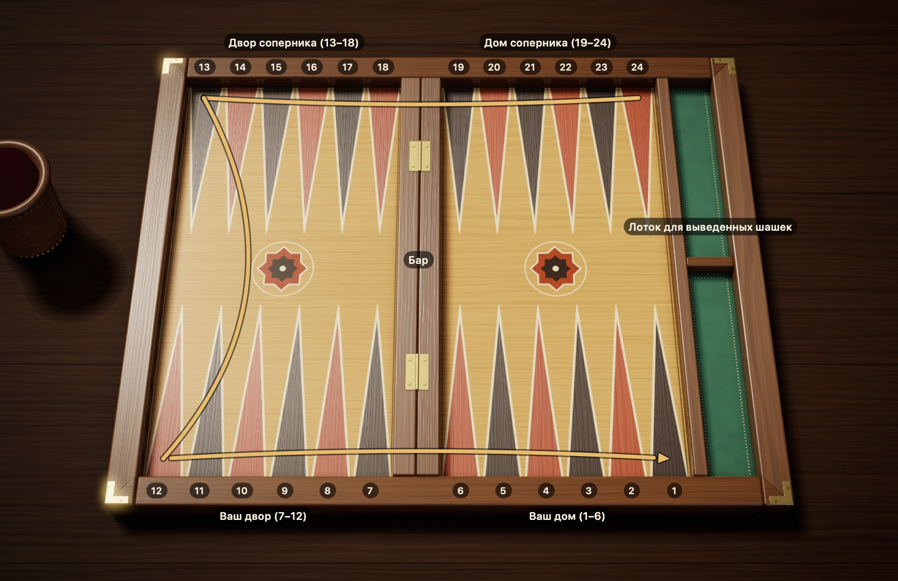
Рисунок 2.1Доска для нард: 24 пункта, четыре области и бар. Вы внизу. Золотая стрелка показывает путь ваших шашек от пункта 24 к пункту 1; соперник идёт тем же путём в обратном направлении.
Области. Представьте доску как поле, разделённое на четыре четверти; в каждой четверти шесть пунктов. Две четверти перед вами — ваша сторона, две напротив — сторона соперника:
Ваш дом (1–6): здесь путь заканчивается. Шашки, дошедшие сюда, выводятся с доски. На Рисунке 2.1 — справа внизу.
Ваш двор (7–12): последняя остановка перед домом. Слева внизу.
Двор соперника (13–18): середина пути. Слева вверху.
Дом соперника (19–24): здесь путь начинается. Справа вверху.
Бар. Возвышение посередине доски называется баром. У него две роли: он отделяет левую половину доски от правой и служит местом ожидания побитых шашек. На счёт пунктов он не влияет: шашка, переходящая с 7 на 6, делает всего один шаг, хотя между ними лежит бар.
Логика номеров. Номера у каждого начинаются от своего дома. Поэтому у каждого треугольника два имени: пункт, который вы называете 1, соперник называет 24. Чтобы не было путаницы, все номера в этой книге даны с вашей стороны. Приложение «Шашки и Кости» может писать эти номера и на бортах доски: включите «Номера пунктов» в разделе «Внешний вид» Настроек.
Направление движения. Ваши шашки всегда идут в сторону уменьшения номеров. Шашка, стартующая с пункта 24 справа вверху, сначала идёт влево вдоль верхнего края, на левом краю спускается вниз, затем движется вправо вдоль нижнего края и приходит в ваш дом. Шашки соперника проходят тот же путь в обратном направлении; поэтому стороны встречаются на пути лицом к лицу.
Зеркальная доска. Некоторые игроки любят ставить дом слева. Тогда вся доска зеркально отражается, и шашки движутся по часовой стрелке. С точки зрения правил между двумя вариантами нет никакой разницы.
2.2 Начальная расстановка
Каждая партия открывается из одной и той же начальной позиции. Расставьте свои 15 шашек по четырём пунктам, от самого дальнего к самому близкому, так:
Пункт 24, 2 шашки. Угол дома соперника. Эта пара — ваши самые дальние от дома шашки.
Пункт 13, 5 шашек. Левый верхний угол; ровно середина пути.
Пункт 8, 3 шашки. В вашем дворе, в двух шагах от дома.
Пункт 6, 5 шашек. Первый пункт вашего дома, у самого бара.
2 + 5 + 3 + 5 — получается 15. Соперник строит ту же схему со своей стороны, поэтому его шашки попадают на ваши пункты 1, 12, 17 и 19. Если сложить доску посередине, две стороны точно совпали бы.
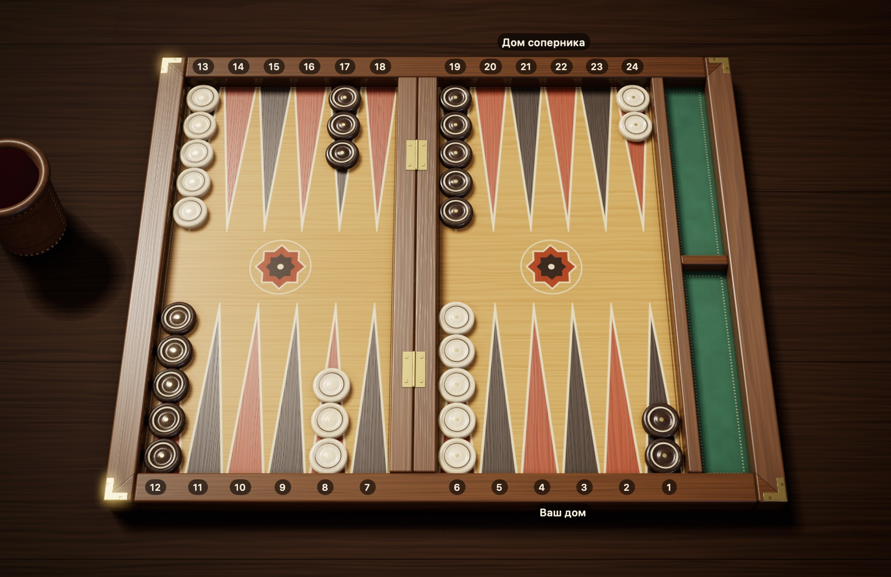
Рисунок 2.2Начальная расстановка: у каждого игрока 15 шашек. Ваши шашки кремовые, ваш дом справа внизу; шашки соперника тёмно-коричневые, его дом справа вверху. У вас 2 шашки на 24, 5 на 13, 3 на 8 и 5 на 6.
Как легко запомнить: выучите «2-5-3-5» и расставляйте шашки, начиная с самого дальнего пункта. Треть ваших шашек (5 шашек) уже в доме, остальные — в разных местах пути. Большая часть партии уходит на то, чтобы безопасно привести домой отставшие шашки.
2.3 Начало партии
Кто делает первый ход, решают зары. Каждый игрок бросает один зар, и начинает выбросивший большее число. Если числа равны, результат не считается; обе стороны бросают снова, пока не выпадут разные числа.
Насчёт первого хода победителя есть две разные традиции:
Международное правило: никто не бросает заново. Два зара на столе — ваш и соперника — вместе становятся вашим первым ходом. Если вы выбросили 5, а соперник 3, вы играете 5-3. Поскольку начальные зары не могут быть равны, этот первый ход никогда не бывает дублем.
Распространённое турецкое правило: победитель берёт оба зара и бросает заново. Этот бросок может быть любым, в том числе дублем.
Дальше игроки ходят по очереди, бросая каждый ход два зара.
Новая партия. По международным правилам каждая партия открывается с нуля розыгрышем первого хода. В турецких нардах же партию обычно открывает победитель предыдущей.
Этикет броска. За столом есть несколько обычаев. Зары обычно встряхивают в стакане и бросают на правую половину доски. Зар, который лёг косо, остался на шашке или выскочил за доску, не играется; бросок повторяют обоими зарами. Ход переходит к вам в тот момент, когда соперник берёт свои зары в руку; бросок, сделанный раньше, не считается. Здесь описан традиционный этикет игры за столом; турнирные регламенты могут отличаться в этих деталях в зависимости от использования часов, стакана или четырёх зар.
2.4 Турецкие и международные правила
В обоих сводах одинаковы счёт пунктов, правила зар и логика закрытых пунктов. Различия сосредоточены в начале партии, в подсчёте очков и в двух игровых деталях: в распространённых турецких нардах запрещёнными считаются «бей и беги» в своём доме и трата пипсов на передвижение шашки при выводе, когда шашку можно вывести. Таблица ниже отражает распространённые правила; от стола к столу возможны небольшие отличия.
В приложении «Шашки и Кости» можно играть по обоим сводам правил. В этой книге везде, где своды расходятся, отдельно указаны оба правила; вам достаточно перед началом партии выбрать, по какому играть.
Таблица 2.1 Турецкие нарды и международные правила
Вопрос
Международные (с кубом)
Распространённые турецкие нарды
Первый ход
Играется начальными зарами, дубль невозможен
Выбросивший больше бросает оба зара заново, возможен дубль
Кто начинает следующую партию
В каждой партии розыгрыш первого хода
Начинает победитель предыдущей партии
«Бей и беги» в своём доме
Разрешено
Считается запрещённым (в приложении «Шашки и Кости» выбирается в новом матче; по умолчанию разрешено)
Передвижение шашки при выводе, когда шашку можно вывести (sallamak)
Разрешено
Считается запрещённым (в приложении «Шашки и Кости» выбирается в новом матче; по умолчанию разрешено)
Бэкгаммон
Есть (× 3)
Нет, считается марсом (× 2)
Куб удвоения
Стандарт, на турнирах обязателен
Нет совсем
Правило Кроуфорда
Стандарт в матчах
Нет
2.5 Игровой экран приложения «Шашки и Кости»
Когда матч начинается, вокруг доски появляются области, показывающие состояние игры. Рисунок 2.3 снят в ваш ход; расшифровка номеров ниже.
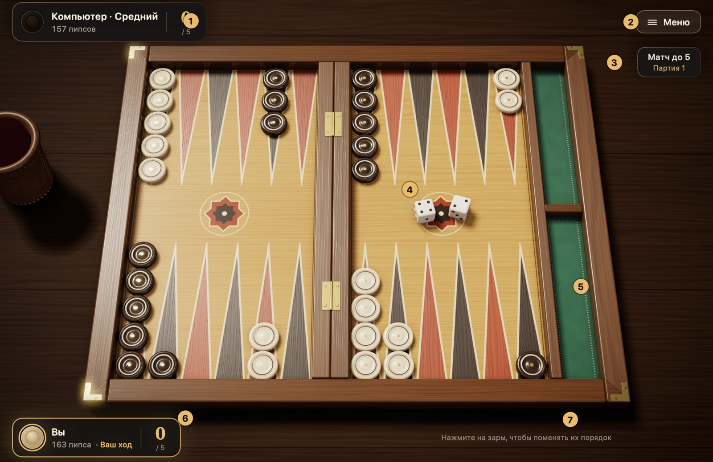
Рисунок 2.3Игровой экран приложения «Шашки и Кости». Расшифровка нумерованных элементов — в списке ниже.
Табличка соперника: показывает соперника (например, «Компьютер · Средний», с уровнем сложности), его счёт пипсов и очки в матче. Пока компьютер думает, здесь написано «Думает…».
Меню: ставит партию на паузу. На открывшейся карточке — продолжить, настройки, карточка «Как играть», история ходов, матчи, сдаться и покинуть матч. То же делает клавиша Esc.
Сведения о матче: показывают, до скольких очков идёт матч (в сессии написано «Сессия») и какая по счёту партия. По международным правилам под ними находится индикатор куба.
Зары: ваши зары падают на правую половину доски, зары компьютера — на левую.
Лоток для выведенных шашек: зелёный лоток справа от доски. Ваши выведенные шашки выстраиваются в его нижней половине, шашки соперника — в верхней.
Ваша табличка: показывает ваш счёт пипсов, ваши очки в матче и, если ход ваш, надпись «Ваш ход».
Строка подсказки: коротко говорит, что вы можете сделать сейчас. Когда вы пробуете недопустимый ход, здесь же читаете причину, например «Эта шашка не может пойти этими зарами».
Дополнительные кнопки. Если включить их в Настройках, справа внизу появляются ещё три кнопки: «Подсказка» отмечает на доске ход, предлагаемый движком Мастер (⌘I); «Отменить» возвращает шаги, сыгранные в этот ход (⌘Z); «Готово» при выключенном автоподтверждении завершает ход и передаёт очередь сопернику (Return). Подробности в разделе 5.3.
Перед началом партии. На панели нового матча вы выбираете уровень сложности, свод правил (турецкие нарды или международные), длину матча — или, по международным правилам, сессию — и цвет своих шашек. Этот выбор действует весь матч; подробности в разделе 5.1.
Как проходит ход? Когда очередь доходит до вас, зары бросаются сами и высыпаются из кожаного стакана на доску; по международным правилам в тот ход, когда вы можете удвоить, приложение ждёт, и вы бросаете зары сами — кнопкой «Бросить зары» или клавишей Пробел. Шашкой вы ходите, перетаскивая её или нажимая сначала на шашку, а затем на пункт назначения; шашки, которыми можно ходить, подсвечиваются, а пункты, куда они могут пойти, отмечаются кольцами. Когда вы сыграли последний шаг, ход завершается и очередь переходит к сопернику. Если вы хотите каждый ход бросать зары сами, подтверждать ход кнопкой «Готово» или отменять шаги, выберите это в Настройках; подробности в разделе 5.3. Ход, нарушающий правила, приложение всё равно не примет.
О чём говорит счёт пипсов? Пипсы на табличках — это сколько пунктов игроку ещё нужно пройти, чтобы привести все шашки домой и вывести их. У кого число меньше, тот впереди в гонке. Подробности в разделе 4.2.
Глава 3
Правила игры
Эта глава по порядку излагает все правила игры: движение шашек, дубль, вынужденный ход, удар и заход побитой шашки, вывод, подсчёт очков и куб удвоения.
3.1 Движение шашек
Игрок, чей ход, бросает два зара и продвигает шашки на столько пунктов, сколько показывают зары. Этот раздел шаг за шагом объясняет, как сыграть зар.
Чтение зар
Зары говорят, на сколько пунктов продвинутся шашки. Выпавшая 4 означает, что одна шашка продвигается на 4 пункта. При счёте пункт, на котором стоит шашка, не считается; вы начинаете со следующего. Шашка с пункта 13 при 4 идёт на пункт 9, отсчитывая 12, 11, 10, 9.
В нардах нет заднего хода: шашка может идти только к пунктам с меньшими номерами, то есть приближаясь к своему дому.
Два зара — два отдельных хода
Думайте о двух зарах как о двух отдельных правах. Когда выпало 5-3, вы распоряжаетесь этими правами как хотите:
Сыграть 5 одной шашкой, а 3 — другой.
Отдать оба одной шашке и перенести её в сумме на 8 пунктов; можно сначала сыграть 3, а можно сначала 5.
Когда вы играете оба зара одной шашкой, шашка на самом деле делает два отдельных прыжка и на мгновение касается пункта, где заканчивается первый прыжок. Этот промежуточный пункт тоже должен быть таким, куда шашка может встать. Сложить два зара и пройти сумму за один раз, перескочив промежуточный пункт, нельзя.
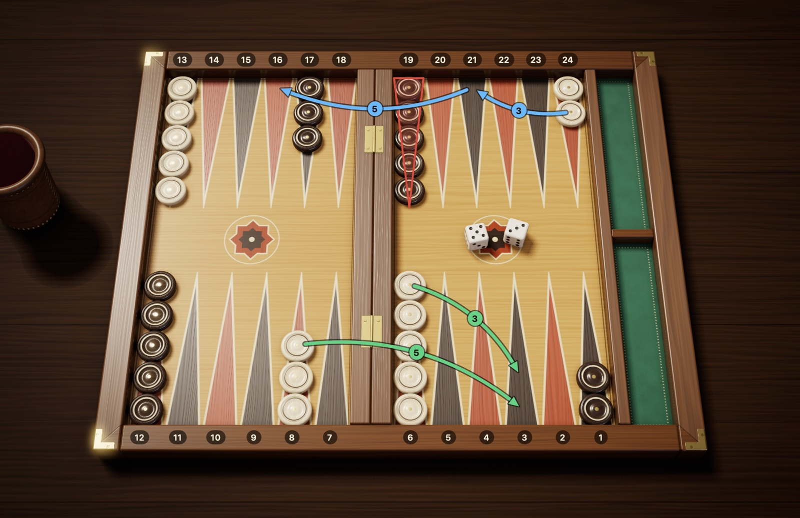
Рисунок 3.1Два способа сыграть 5-3. Зелёные стрелки, способ 1: 8→3 (5) и 6→3 (3); две разные шашки закрывают пункт 3. Синие стрелки, способ 2: 24→21 (3), затем 21→16 (5); одна и та же шашка проходит в сумме 8 пунктов. Та же шашка не может сначала сыграть 5: пункт 19 в красной рамке — закрытый пункт соперника, промежуточной остановкой он быть не может.
Верно и обратное: один зар нельзя делить на части. Разделить 5 на 3 и 2 между двумя разными шашками против правил; каждый зар целиком принадлежит одной шашке.
Куда можно поставить шашку?
Когда вы продвигаете шашку, важно, что на пункте назначения. Есть четыре варианта:
Таблица 3.1 Когда можно поставить шашку на пункт назначения
Что на пункте назначения?
Можно ли встать?
Ни одной шашки (пустой пункт)
Да
Одна или больше ваших шашек
Да, без ограничения числа
Одиночная шашка соперника (блот)
Да, шашка соперника бьётся
Две или больше шашек соперника (закрытый пункт)
Нет
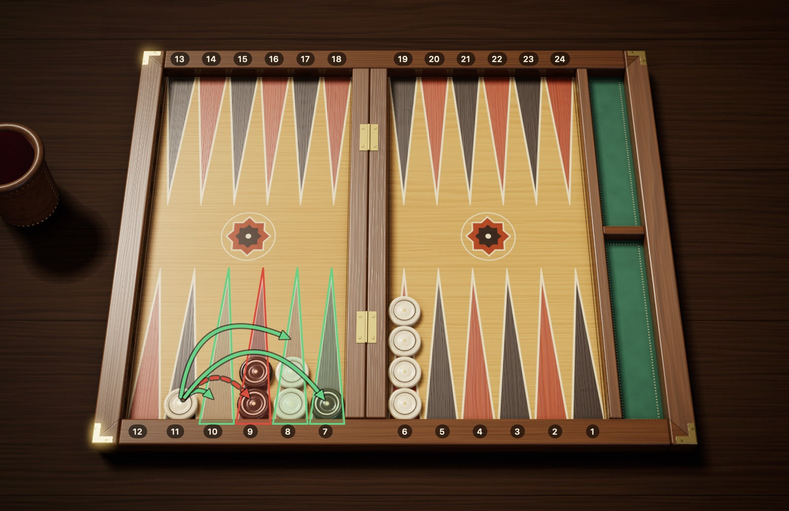
Рисунок 3.2Открытый пункт и закрытый пункт. Для шашки на 11: пункт 10 пуст, встать можно. На 8 ваши шашки — туда можно поставить сколько угодно. На 7 одиночная шашка соперника (блот); встать можно, и эта шашка бьётся. На 9 в красной рамке две шашки соперника (закрытый пункт): пунктирная красная стрелка показывает, что туда встать нельзя.
Пункт, на котором вместе стоят две или больше шашек, мы называем закрытым пунктом. Думайте о нём как о стене: соперник не может ни встать на этот пункт, ни коснуться его как промежуточной остановки при ходе на два зара. Умно закрывать свои пункты — самый действенный способ сузить сопернику дорогу.
3.2 Дубль
Когда оба зара показывают одно число (от 1-1 до 6-6), вам достаётся бонус: это число вы играете не два, а целых четыре раза. Выбросивший 5-5 делает четыре отдельных хода по 5 и продвигается в сумме на 20 пунктов. Такой бросок называется дублем.
Четыре хода можно распределить как угодно: четырём разным шашкам по одному, двум шашкам по два или одной шашке все четыре. Если одна шашка делает несколько шагов, каждая промежуточная остановка на её пути должна быть открыта.
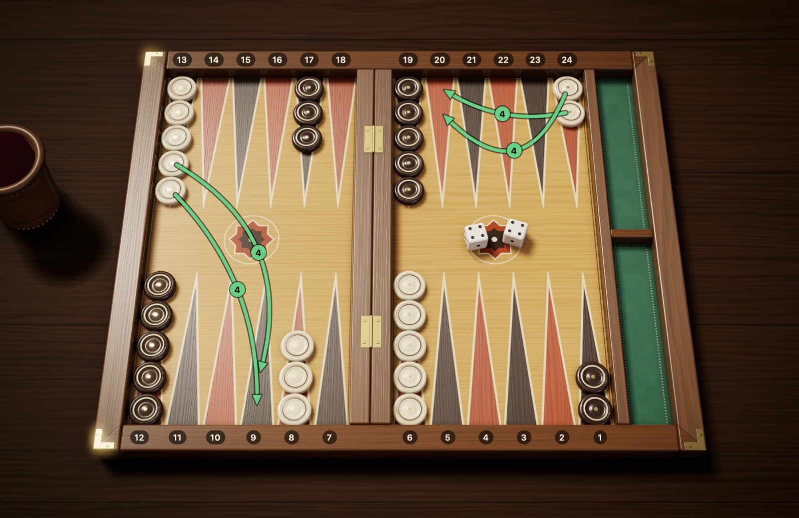
Рисунок 3.3Дубль: четыре хода при 4-4. Переведите две шашки с 24 на 20 (4 + 4), две шашки с 13 опустите на 9 (4 + 4). Каждый из четырёх ходов — 4 пункта; распределяйте их между шашками как хотите.
3.3 Вынужденный ход
После броска зар у вас нет права сказать «этот ход пропускаю». Если зары допускают какой-либо ход, вы обязаны его сделать. Какие зары и сколько из них использовать, помогут определить такие вопросы:
Есть ли ход, использующий оба зара? Если есть, вы должны сделать его. Если первый пришедший в голову ход оставляет один зар неиспользованным, ищите другой путь, при котором можно сыграть оба.
Можно сыграть только один зар? Тогда вы играете тот, который можно, а другой сгорает.
Каждый зар можно сыграть по отдельности, но оба вместе сыграть нельзя? В этом случае выбор не за вами: вы играете зар с большим числом. Рисунок 3.4 показывает это.
Ни один зар сыграть нельзя? Ваш ход пропадает, и очередь бросать переходит к сопернику.
Выпал дубль? Если сыграть все четыре хода нельзя, вы обязаны сделать максимально возможное по правилам число ходов; если порядок ходов влияет на это число, нужно выбрать тот порядок, который позволяет сыграть больше. Остальное сгорает.
Рисунок 3.4Правило большего зара: 6-5. Шашка на 14 может пойти 6 на 8 (зелёная стрелка) или 5 на 9 (пунктирная стрелка), но не оба сразу: второй шаг обоих путей выходит на пункт 3 (красная рамка), закрытый соперником. Остальные ваши шашки в глубине дома не могут сыграть ни один зар. Если зары играются по отдельности, но не вместе, играется больший: 14→8.
В результате этих правил иногда остаётся единственный ход, который вы можете сделать; он называется вынужденным ходом. В цифровых нардах эти правила проверяет само приложение и не допускает ход, нарушающий правила; на настоящей доске следить за этим приходится вам.
3.4 Блот и удар
Самое захватывающее в нардах — удар. Сначала нужно различить два положения:
Блот: шашка, оставшаяся на пункте одна. Она беззащитна; если соперник встанет на неё, она лишится своего места.
Закрытый пункт: пункт, который делят как минимум две шашки одного цвета. Стоящие здесь шашки неприкосновенны.
Поставив свою шашку на пункт, где стоит блот соперника, вы этот блот бьёте. Побитую шашку снимают с доски и сажают на бар посередине. Для соперника это серьёзный шаг назад: шашке придётся начать путь с самого начала, и, пока она не вернётся на доску, руки у соперника связаны.
Рисунок 3.5Удар: ходом 13→9 бьётся блот. 4: 13→9 — встав на одиночную шашку соперника, вы её бьёте; побитая шашка уходит на бар (пунктирная стрелка). 2: 11→9 — вы подводите вторую шашку и закрываете пункт 9; теперь вас побить нельзя.
Что нужно знать:
Бить не обязательно. Имея возможность побить блот, вы можете выбрать другой ход.
После удара можно продолжить путь той же шашкой. Например, при 4-2 можно провести шашку на 4 пункта и побить, а затем продвинуть ту же шашку ещё на 2 пункта. Это называется «бей и беги» (по-турецки vur kaç). По международным правилам это разрешено в любом месте доски; в распространённых турецких нардах и в греческом portes убегать той же шашкой после удара в своём доме запрещено. В приложении «Шашки и Кости», играя по турецким правилам, этот запрет можно включить переключателем «Без „бей и беги“» на панели нового матча; по умолчанию он выключен.
За один ход можно побить несколько блотов; например, одна шашка может побить один блот на промежуточной остановке между двумя зарами и другой — в точке прибытия.
Те же правила действуют и для вас. Оставленный вами блот бьётся, если у соперника выпадут подходящие зары. Поэтому, когда возможно, старайтесь держать шашки парами.
3.5 Заход с бара
Когда побита ваша шашка, с приходом вашего хода у вас одна задача: вернуть эту шашку на доску. Пока у вас есть шашка, ждущая на баре, остальные ваши шашки считаются замороженными.
Откуда она заходит? Побитая шашка начинает путь с начала, то есть из дома соперника. Пункт, на который она заходит, определяет зар. Отсчитайте пункты дома соперника от края к бару, от 1 до 6: выбросив 1, вы заходите на пункт в углу доски, выбросив 6 — на пункт, примыкающий к бару. В вашей нумерации:
Таблица 3.2 Пункт захода побитой шашки по зару
Зар
Пункт захода
1
24
2
23
3
22
4
21
5
20
6
19
На пункте, который показывает зар, может не быть ни одной шашки, могут стоять ваши шашки или одиночная шашка соперника. Во всех трёх случаях вы заходите; в последнем, заходя, вы бьёте эту шашку. Закрыт для вас только пункт, закрытый соперником.
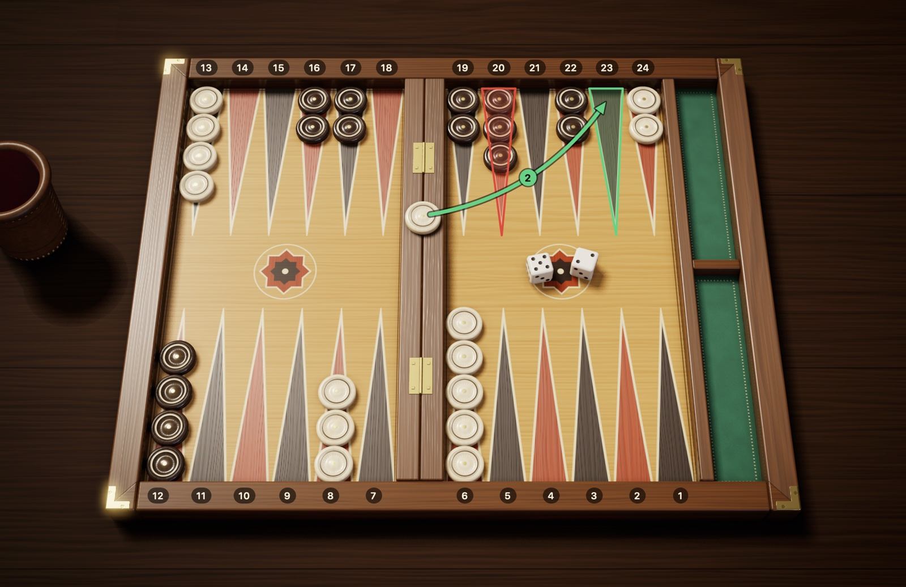
Рисунок 3.6Заход с бара: 5-2. Ваша шашка с бара заходит в дом соперника: 1 — на 24, 2 — на 23 … 6 — на 19. Заром 5 зайти нельзя: пункт 20 закрыт соперником (красная рамка). Заром 2 вы заходите на пустой пункт 23 (зелёная рамка). Зайдя, вы играете 5 другой шашкой или зашедшей.
Заход шаг за шагом:
Бросьте зары и посмотрите, какому пункту в доме соперника соответствует каждый зар.
Если хотя бы один из этих пунктов для вас открыт, поставьте шашку туда.
Заход расходует один зар. Другой зар остаётся свободным; им вы ходите любой шашкой, если хотите — только что зашедшей.
Если на баре две ваши шашки, оба зара уходят на заходы. Если зайти может только одна, вы ставите её; поскольку вторая шашка остаётся ждать на баре, других ходов в этот ход вы сделать не можете.
Заход делается одним заром. Допустим, вы выбросили 5-2; 20 и 23 закрыты соперником, а пункт 18 пуст. Сложить два зара, отсчитать 7 пунктов и опуститься прямо на 18 нельзя. Шашка сначала должна зайти одним заром на открытый пункт в доме соперника; здесь оба закрыты, так что захода нет.
Остаться на баре (gele)
Если оба пункта, которые показывают зары, закрыты соперником, ваша шашка на баре в этот ход остаётся снаружи. Такой неудачный бросок называют gele — остаться на баре. Поскольку при шашке на баре другими шашками ходить нельзя, ваш ход пропадает; в следующий свой ход вы пробуете удачу снова.
Заперт
Худший случай — когда закрыты все шесть пунктов дома соперника. Тогда, какие бы зары ни выпали, пункта для захода нет; в этом положении говорят, что вы заперты. Пока соперник не откроет один из своих пунктов, каждый ваш ход пропускается; за столом даже не нужно бросать зары, очередь сразу переходит к сопернику. В приложении «Шашки и Кости» то же самое: зары не бросаются, на экране появляется «Вы заперты», и очередь сразу переходит к сопернику.
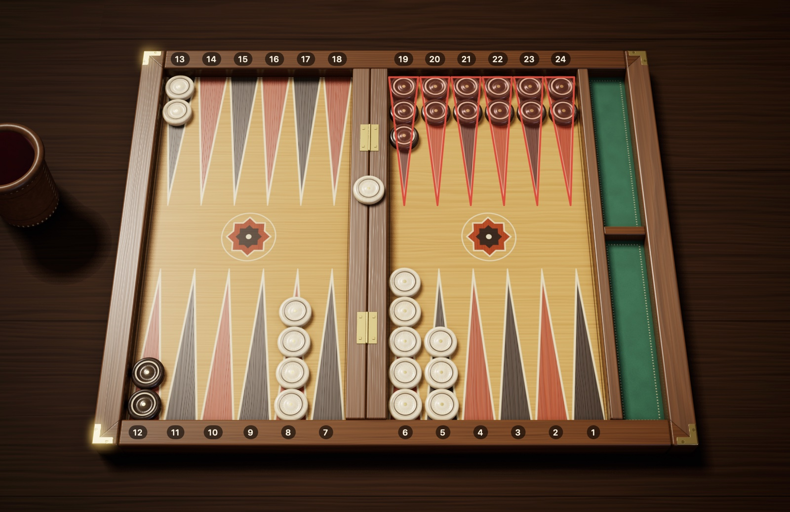
Рисунок 3.7Заперт: дом соперника полностью закрыт. Ваша шашка с бара могла бы зайти на открытый пункт между 19 и 24, но все шесть пунктов закрыты (красные рамки). Это и значит быть запертым: пока соперник не откроет один пункт, ваш ход пропускается без броска зар.
3.6 Вывод шашек
Финишная прямая гонки — снятие шашек с доски; это называется выводом. У него есть предварительное условие: все ваши шашки на доске должны быть в вашем доме, то есть на пунктах 1–6. Если хотя бы одна ваша шашка снаружи или ждёт на баре, начать вывод нельзя.
Основное правило
Правило простое: выпавшее число показывает пункт, с которого вы снимаете шашку. Выпало 6 — вы снимаете шашку с пункта 6, выпало 2 — с пункта 2, и кладёте её в отсек у края доски. Выведенная шашка полностью покидает игру.
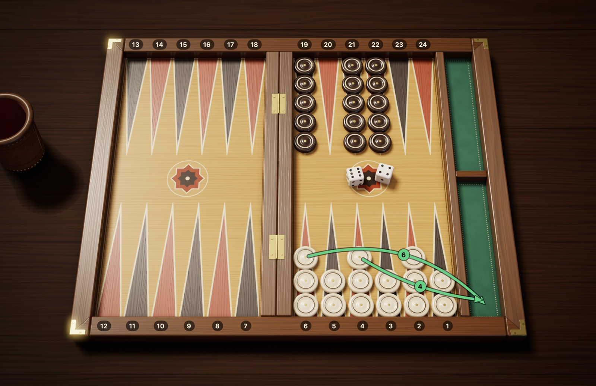
Рисунок 3.8Вывод: две шашки при 6-4. 6 снимает шашку с пункта 6, 4 — с пункта 4; обе уходят в лоток справа. Вывод начинается только тогда, когда все 15 шашек в вашем доме.
Если на пункте зара нет шашки
Иногда пункт, который показывает зар, пуст. Тогда задайте по порядку два вопроса:
Есть ли у меня шашка на пункте с большим номером? Если есть, этим заром нельзя вывести шашку с пункта ниже; вы играете его иначе — обычно продвигая шашку с того более высокого пункта.
Выше у меня шашек нет? Тогда вы выводите шашку с самого высокого пункта, где у вас есть шашка. Например, если ваша самая дальняя шашка на 4, то и 6, и 5 выводят её.
Рисунок 3.9Вывод: если выше есть шашка, она продвигается. Для 5: пункт 5 пуст, но на более высоком пункте 6 есть шашка; заром 5 нельзя вывести шашку ни с 3, ни с 1. 5 вы играете, продвигая шашку с 6 (6→1), а 1 выводит шашку с пункта 1. Другой путь: сначала 1 — 6→5, затем 5 выводит эту шашку с пункта 5. В лотке лежат 10 выведенных ранее шашек.
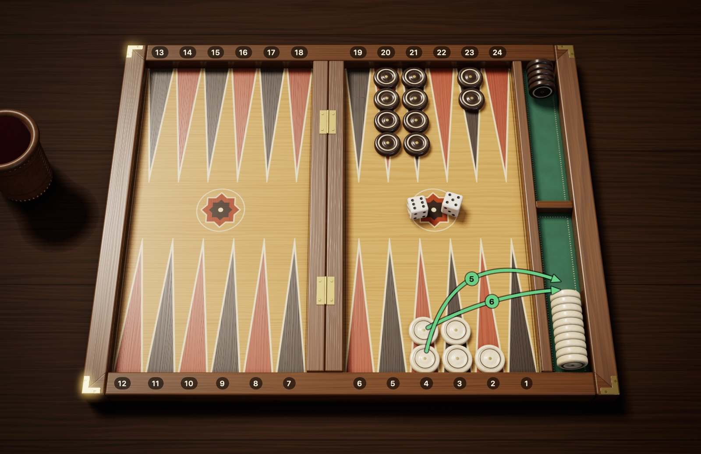
Рисунок 3.10Вывод: с самого высокого пункта. Ни на пунктах 6 и 5, ни выше шашек у вас не осталось. В этом случае обоими зарами вы выводите по шашке с самого высокого занятого пункта, то есть с 4.
Выводить не обязательно
Если у вас есть другой ход по правилам, снимать шашку вы не обязаны. Когда вы передвигаете шашки вперёд внутри дома и откладываете вывод, по-турецки это называется sallamak. Иногда это самый разумный выбор: так вы не оставите сопернику блот, который он может побить. Можно и одним заром передвинуть шашку, а другим вывести её с доски. Эта свобода относится к международным правилам; в распространённых турецких нардах, когда шашку можно вывести, продвигать шашку меньшим заром и тратить пипсы считается запрещённым. В приложении «Шашки и Кости», играя по турецким правилам, этот запрет можно включить переключателем «Обязательный вывод» на панели нового матча; по умолчанию он выключен.
Если вас побили при выводе
Если у соперника есть шашка, ждущая в вашем доме, блот, оставленный вами во время вывода, может быть побит. Тогда вывод останавливается: побитая шашка должна сначала зайти в игру из дома соперника, обойти доску и вернуться в ваш дом. Когда все ваши оставшиеся на доске шашки снова соберутся в вашем доме, вы продолжите с того места, где остановились.
3.7 Конец партии и очки
Партию берёт тот, кто первым выведет все свои шашки. Размер же выигрыша зависит от того, насколько отстал соперник в момент окончания. Когда партия закончится, посмотрите на шашки соперника; возможно одно из трёх положений:
Таблица 3.3 Результат партии и очки
Результат
Положение соперника
Международные, без куба
Международные, с кубом
Турецкие нарды
Одинарная партия
Вывел хотя бы одну шашку
1
Значение куба × 1
1
Марс
Не вывел ни одной шашки
2
Значение куба × 2
2
Бэкгаммон
Не вывел ни одной шашки, и у него ещё есть шашка на баре или в вашем доме
3
Значение куба × 3
2 (считается марсом)
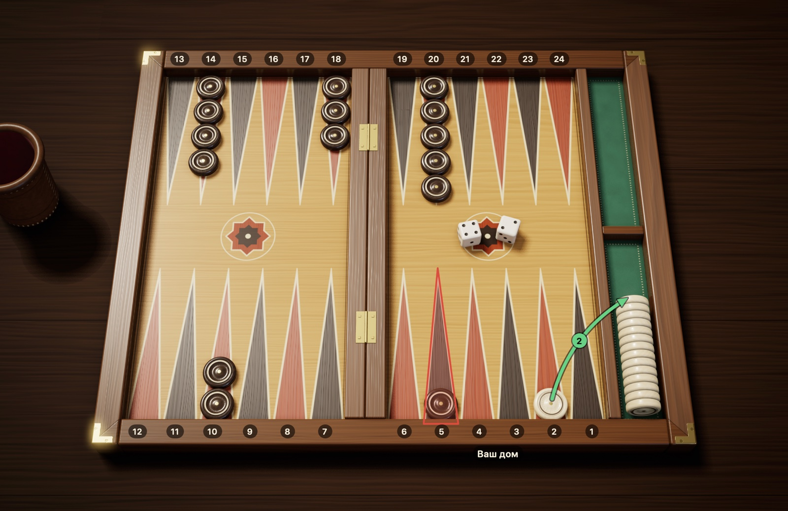
Рисунок 3.11Бэкгаммон: у соперника ноль выведенных и шашка в вашем доме. Ходом 2 вы вывели последнюю шашку и выиграли партию. Соперник не вывел ни одной шашки: уже это марс (2 очка). Кроме того, на пункте 5 в красной рамке, то есть в вашем доме, у него ещё стоит шашка: бэкгаммон (3 очка).
Примеры:
Если к моменту, когда вы вывели последнюю шашку, соперник вывел 4 шашки, вы выигрываете одинарную партию: 1 очко.
Если соперник не вывел ни одной шашки, но у него не осталось шашек ни на баре, ни в вашем доме, это марс: 2 очка.
Если соперник не вывел ни одной шашки и одна его шашка ещё на баре или в вашем доме, это бэкгаммон: 3 очка.
Игрок, сделавший марс при кубе на 8, получает 8 × 2 = 16 очков.
В турецких нардах бэкгаммон — не отдельный результат; такое положение тоже считается марсом и приносит 2 очка. Уточняйте перед партией, по какому своду правил вы играете.
Счёт матча. В нарды чаще всего играют не одну партию, а до определённого числа очков; на турнирах это обычно 5, 7 или 11 очков. В конце каждой партии очки записываются победителю; если игра идёт с кубом, очки умножаются на значение куба. Кто первым достигнет нужного счёта, выигрывает матч. Поэтому то, сделаете ли вы марс или избежите его, может изменить исход матча.
3.8 Куб удвоения
Куб удвоения — кубик с числами, который никогда не бросают. На его гранях написано 2, 4, 8, 16, 32 и 64, и он лишь показывает текущую стоимость партии. В дворовых нардах Турции он почти не встречается; зато без него не обходятся международные турниры и онлайн-матчи. В приложении «Шашки и Кости» куб удвоения тоже есть; он используется, когда в начале партии выбран международный свод правил; как удвоить и как ответить на предложение, рассказано в разделе 5.4. Если вы собираетесь играть без куба, этот раздел можно пропустить.
Место и значение куба
В начале партии куб лежит между игроками, и на его верхней грани стоит 64. Поскольку на кубе нет 1, 64 здесь означает «ещё не удвоен, партия идёт на 1 очко». Пока куб в центре, первое предложение может сделать любой из вас. После того как предложение принято, право следующего предложения у того, перед кем лежит куб. В приложении «Шашки и Кости» куб показан под сведениями о матче справа вверху: в начале написано «1 Куб в центре»; после принятого удвоения рядом со значением куба написано «Куб у вас» или «Куб у соперника».
Удвоение шаг за шагом
Когда? Предложение можно сделать только в свой ход и прежде чем коснуться зар. После броска возможность на этот ход упущена.
Как? Если вы считаете своё положение хорошим, вы поворачиваете куб на следующее значение (в первый раз — на 2), протягиваете его сопернику и говорите «удваиваю». Смысл такой: «Сыграем эту партию на удвоенную ставку?»
Что может сделать соперник?
Принять: он берёт куб на свою сторону удвоенным значением вверх (при первом удвоении — 2); партия продолжается с той же позиции, но уже на удвоенную ставку.
Отказаться: он сдаёт партию тут же. Проигранные очки — значение куба до предложения; при первом предложении это 1 очко.
Чьё следующее предложение? Куб переходит к игроку, принявшему предложение, и право следующего удвоения только у него. Поэтому предложения всегда идут по очереди; один и тот же игрок не может удвоить два раза подряд.
Пример
Допустим, в начале партии соперник удвоил, и вы приняли; куб на 2, перед вами. Через несколько ходов партия поворачивается в вашу пользу, и вы поворачиваете куб на 4 и протягиваете сопернику. Если соперник откажется, вы выигрываете партию и получаете 2 очка. Если примет, куб на 4 переходит к нему, и очки, выигранные в конце партии, указаны в строке «4» Таблицы 3.4.
Таблица 3.4 Выигранные очки по значению куба
Куб
Одинарная партия
Марс
Бэкгаммон
В центре (1)
1
2
3
2
2
4
6
4
4
8
12
8
8
16
24
Что нужно знать:
У удвоения нет потолка; и после 64 значение продолжает удваиваться: 128, 256. Впрочем, до таких высоких значений доходят очень редко.
Если право удвоения у вас, шашка, ждущая на баре, не мешает сделать предложение. В приложении «Шашки и Кости» единственное исключение — когда вы заперты: при полностью закрытом доме соперника ход переходит без броска зар, и удвоить в этот ход тоже нельзя.
Удваивать или нет, принимать или нет — одни из важнейших проявлений мастерства в игре; ориентиры — в следующем подразделе.
Решения по кубу
Правильно пользоваться кубом — одно из тончайших умений в нардах. Ниже не строгие правила, а надёжные ориентиры для начала.
Когда принимать: получив предложение, задайте себе примерно такой вопрос: «Если бы я сыграл эту партию четыре раза, выиграл бы я хотя бы одну?» Если ваши шансы на победу около четверти или выше, принимать обычно правильно. Ведь при отказе ваша потеря становится окончательной; приняв же, вы получаете шанс перевернуть партию и право позже использовать куб в свою пользу. Этот ориентир в 25 % идёт из простейшей модели, не учитывающей марс и повторное удвоение: ценность владения кубом немного снижает порог, риск марса его повышает, а счёт матча может сдвинуть в любую сторону.
Когда удваивать: если ваше положение заметно лучше, но партия ещё не закончена, пришло время удвоить. Избегайте трёх ошибок:
Удвоить слишком рано: удвоение при небольшом преимуществе даёт сопернику и лёгкое принятие, и владение кубом.
Удвоить слишком поздно: ваше положение становится настолько хорошим, что соперник уже не принимает и отдаёт партию за 1 очко; а предложи вы ходом раньше, он бы принял, и вы играли бы на удвоенную ставку. Это называется «потерять рынок».
Позиция слишком хороша для удвоения: позиция может быть настолько сильной, что соперник наверняка откажется. Если ожидаемый выигрыш от марса при игре без куба выше, чем 1 очко, которое вы получите при отказе соперника, позиция «слишком хороша для удвоения». Этот ориентир не действует в сессиях с правилом Джекоби; там без удвоения марс считается за 1 очко, так что куб повернуть нужно. В матче на ценность марса влияет и счёт.
Правило 8-9-12 в чистой гонке. Если контакт закончился и партия — только гонка пипсов, решение принимает счёт пипсов. Разницу разделите на счёт пипсов лидирующего игрока и выразите в процентах; если позади вы, всё равно делите на число соперника, то есть лидера:
Таблица 3.5 Правило 8-9-12 в чистой гонке
Разница в пипсах (от числа лидера)
Решение
Впереди на 8 %
Подумайте о первом удвоении
Впереди на 9 %
Если куб у вас, удвойте повторно
Позади до 12 %
Если предложат, принимайте
Позади более чем на 12 %
Откажитесь
Пример: если у вас 80 пипсов, а у соперника 88, вы впереди на 8 пипсов; это 10 % от числа лидера, 80, и вы в зоне удвоения. Поскольку правило опирается на сырой счёт пипсов, будьте немного осторожнее, если ваши шашки скопились на низких пунктах. Правило действует, когда ход ваш, контакт полностью закончился и гонка средняя или длинная; когда партия сводится к последним нескольким шашкам, вместо процентов нужно смотреть на расположение шашек, а если идёт матч — отдельно оценивать счёт.
Правила матча и сессии
Правило Кроуфорда: когда в матче одному из игроков впервые остаётся одно очко до нужного счёта (в матче до 5 очков — при 4 очках), в следующей сразу за этим партии куб не используется; она называется партией Кроуфорда. После неё куб снова вступает в игру и свободен до конца матча. Правило срабатывает за матч только один раз; если позже другой игрок тоже дойдёт до того же счёта, новая партия Кроуфорда не играется. Цель — не дать отстающему игроку сразу удваивать каждую партию и ликвидировать разрыв за одну партию. Правило названо по имени американского игрока Джона Р. Кроуфорда.
Дополнительные правила (встречаются в сессиях, в матчах не используются):
Автоматические удвоения: если при розыгрыше первого хода выпадают одинаковые зары, куб сам поворачивается на 2 и остаётся в центре. Обычно это бывает не больше одного раза за партию.
Бивер: игрок, которому предложили удвоение, принимая его, может сразу удвоить куб ещё раз, и куб остаётся у него. Удвоивший может принять бивер или отказаться; при отказе он теряет значение своего удвоения, при первом удвоении это 2 очка.
Ракун: игрок, столкнувшийся с бивером, то есть сделавший первое удвоение, может сразу удвоить значение ещё раз. Куб по-прежнему остаётся у игрока, принявшего удвоение; другая сторона либо принимает новое значение, либо отдаёт партию по текущему. Как и бивер, встречается только в сессиях.
Правило Джекоби: если в партии не было ни одного удвоения, марс и бэкгаммон считаются только за 1 очко. Оно побуждает лидирующего игрока удваивать, а не гнаться за марсом.
Глава 4
Играть лучше
Основы хорошей игры после изучения правил: пример партии, счёт пипсов, дебютные ходы, игровые планы, риск оставить блот и стратегия вывода.
4.1 Пример партии: первые пять ходов
Чтобы увидеть, как правила работают вместе, проследим шаг за шагом первые пять ходов одной партии. Доска в начальной расстановке, играем по международным правилам. Номера пунктов даны с вашей стороны.
Розыгрыш первого хода. Вы выбрасываете 3, соперник — 1. Больше выбросили вы; свой первый ход вы играете этими 3-1. 3 — 8→5, 1 — 6→5: вы закрываете пункт 5. Это один из самых рекомендуемых дебютных ходов.
Соперник выбрасывает 6-4. Он убегает одной из задних шашек: шашка с вашего пункта 1 идёт 6 на 7 и 4 на 11. На 11 шашка остаётся одна, то есть блотом.
Вы выбрасываете 4-2. 2 — 13→11: вы бьёте блот соперника; его шашка уходит на бар. 4 — 24→20.
Соперник выбрасывает 5-5. Поскольку у него шашка на баре, он обязан сначала ввести её. Пункт, на который нужно зайти при 5, — ваш пункт 5, но вы его закрыли. Поскольку все четыре зара — это 5, соперник остаётся на баре (gele); в этот ход он не может сдвинуть ни одной шашки.
Вы выбрасываете 6-5. Оставшуюся на 24 шашку вы ведёте 6 на 18 и 5 на 13. Пункт 18 пуст, так что промежуточная остановка свободна; на 13 ваши шашки уже есть.
После пяти ходов доска выглядит как на Рисунке 4.1:
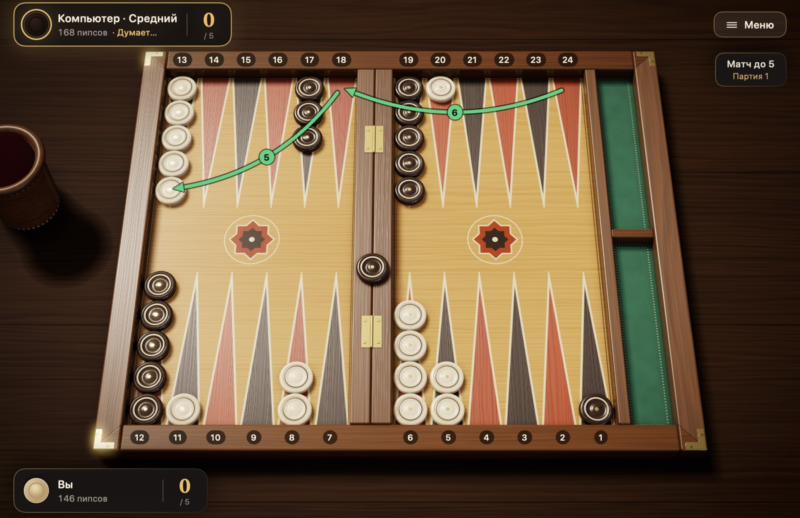
Рисунок 4.1Пример партии: позиция после пятого хода. Последний ход: 6-5 — шашка с 24 пробежала сначала на 18, потом на 13 (зелёные стрелки). Одна шашка соперника ждёт на баре; ваш закрытый пункт 5 затрудняет ей заход. Ваши блоты на 20 и 11. Счёт пипсов на табличках игроков: у вас 146, у соперника 168; ход соперника.
За эти пять ходов были использованы все правила: движение, закрытие пункта, удар, заход и gele. Так партия и продолжается, пока обе стороны не приведут шашки домой и не выведут их.
4.2 Счёт пипсов
Поскольку нарды — гонка, в любой момент партии очень важен вопрос «кто ближе к дому?». Ответ на него даёт счёт пипсов: сколько всего пунктов игроку нужно пройти, чтобы привести все шашки в дом и вывести их с доски.
Как считать? Расстояние каждой шашки — номер её пункта в вашей нумерации. Шашка на пункте 6 — в 6 пипсах, шашка на пункте 13 — в 13. Шашка на баре дальше всех и считается за 25. Расстояния всех шашек складываются.
Например, в начальной позиции: 2 × 24 + 5 × 13 + 3 × 8 + 5 × 6 = 48 + 65 + 24 + 30 = 167 пипсов. Оба игрока начинают партию со 167. С каждым ходом ваш счёт уменьшается ровно на столько, сколько шашка реально прошла (когда при выводе большим заром вы снимаете шашку с самого высокого пункта, уменьшение равно не значению зара, а номеру пункта, где стояла шашка); побитая же шашка, вернувшись на бар, разом увеличивает счёт своего владельца.
В приложении «Шашки и Кости» считать это не нужно. Счёт пипсов на табличках игроков обновляется сам после каждого хода. В примере партии из раздела 4.1 у вас 146, у соперника 168 пипсов; то есть у вас преимущество примерно в три броска.
Зачем это знать?
Если вы впереди, обычно хороший план — избегать контакта и быстро идти домой.
Если вы позади, выиграть одной гонкой трудно; вы ищете возможность побить шашки соперника или перегородить ему путь.
Если вы играете с кубом, в чистой гонке решения по кубу определяет разница в пипсах. Что делать при какой разнице, рассказано в разделе 3.8, под заголовком «Решения по кубу».
4.3 Дебютные ходы
Поскольку первый ход партии всегда делается из одной и той же позиции, хорошие розыгрыши для каждого броска в основном установлены компьютерным анализом. Таблица 4.1 даёт общепринятые розыгрыши для партий по международным правилам без учёта счёта матча; в матче счёт может изменить выбор для некоторых бросков. Запись имеет вид «откуда/куда»: 8/5 означает с пункта 8 на пункт 5; (2) показывает, что тот же ход сделан двумя шашками.
Таблица 4.1 Дебютные ходы по международным правилам
Бросок
Рекомендуемый розыгрыш
Разумная альтернатива
Цель
3-1
8/5 6/5
—
Закрыть пункт 5
4-2
8/4 6/4
—
Закрыть пункт 4
6-1
13/7 8/7
—
Закрыть пункт 7, перекрыть подступ к дому
5-3
8/3 6/3
—
Закрыть пункт 3
6-5
24/13
—
Увести одну из задних шашек одним ходом
6-4
24/14
24/18 13/9 или 8/2 6/2
Три розыгрыша почти равноценны
6-3
24/18 13/10
24/15
Развиваться и сзади, и в середине
6-2
24/18 13/11
24/16
Развиваться и сзади, и в середине
5-4
24/20 13/8
13/9 13/8
Кандидат на якорь сзади, новая шашка в середине
5-2
13/8 24/22
13/8 13/11
Безопасное развитие из середины
5-1
13/8 24/23
13/8 6/5
Безопасная шашка, разделить задние шашки
4-3
13/10 13/9
24/21 13/9 или 24/20 13/10
Подвести шашки-строители (билдеры) для дома
4-1
24/23 13/9
13/9 6/5
Разделить задние шашки, новая шашка в середине
3-2
24/21 13/11
13/11 13/10
Разделить задние шашки, новая шашка в середине
2-1
13/11 6/5
13/11 24/23
Занять пункт 5 одной шашкой (слот) или разделить задние шашки
Розыгрыши в Таблице 4.1 опираются на компьютерный анализ с сайта Backgammon Galore. Ходы в столбце «Разумная альтернатива» тоже хороши; разница между ними в анализе очень мала, и выбирать можно по своему стилю. Начинающие, которые хотят играть надёжно, при 2-1 могут предпочесть 13/11 24/23, а при 6-4 — 8/2 6/2, не оставляющий ни одного блота. Для сравнения: блот, оставленный ходом 24/14, бьётся 11 бросками из 36; хотя бы один из двух блотов, оставленных ходом 24/18 13/9, — 27 бросками из 36.
По международному правилу первый ход никогда не бывает дублем. Если вы играете по турецкому правилу, первый бросок может быть и дублем; тогда хорошее начало — такие розыгрыши:
Таблица 4.2 Дубль в первом броске по турецкому правилу
Дубль
Рекомендуемый розыгрыш
6-6
24/18(2) 13/7(2)
5-5
13/3(2)
4-4
24/20(2) 13/9(2)
3-3
8/5(2) 6/3(2)
2-2
13/11(2) 6/4(2)
1-1
8/7(2) 6/5(2)
Заучивать эти таблицы не нужно. Но полезно увидеть их общую логику: если можно, закрывайте новые пункты в доме или перед ним; если нельзя — двигайте задние шашки, и не оставляйте шашки одиночками там, где их легко побить.
4.4 Основные игровые планы
Большинство партий в нарды сводится к одному из нескольких знакомых планов. Какой подходит вам, определяют разница в пипсах и закрытые пункты на доске. По ходу партии переходить от одного плана к другому тоже нормально.
Гонка: если вы впереди по пипсам, вы разрываете контакт с соперником и быстро ведёте все шашки домой. Когда контакт закончен, партия превращается в чистую гонку зар, и лидер обычно выигрывает.
Удерживающая игра (якорь): вы держите закрытый пункт из двух шашек в доме соперника. Этот «якорь» защищает вас от удара и даёт шанс побить соперника, если он откроется, возвращаясь домой. Если вы позади, это самый надёжный план.
Игра на прайм: закрывая пункты подряд, вы строите заслон перед задними шашками соперника. Если шесть закрытых пунктов идут подряд, шашка позади них не пройдёт ни одним заром; вы медленно сдвигаете прайм к дому и сжимаете соперника.
Атака: вы снова и снова бьёте шашки соперника, заходящие в ваш дом, и быстро закрываете дом. Удачная атака запирает соперника и часто приносит марс; но если она не удаётся, вы остаётесь со своими блотами позади.
Задняя игра: сильно отставая, вы держите два якоря в доме соперника и ждёте, когда он, собирая шашки домой, оставит блот. Это план спасения, а не начало, которое выбирают сознательно.
Это не механические правила, а интуиция. Темп, качество ваших закрытых пунктов, положение задних шашек и риск марса могут требовать противоположного тому, на что указывает разница в пипсах: ошибкой будет и сразу бросить сильный прайм при большом преимуществе в пипсах, и прекратить успешную атаку только потому, что вы позади.
4.5 Риск оставить блот
Иногда без одиночной шашки не обойтись. Тогда вопрос такой: где её оставить, чтобы её били реже всего? Ответ определяется тем, на сколько пунктов блот отстоит от шашки соперника, которая может его побить.
Рисунок 4.2Вероятность удара по блоту в зависимости от расстояния. Блот в 6 пунктах в наибольшей опасности; с 7 и дальше риск резко падает. Столбики показывают, сколько из 36 возможных бросков соперника бьют ваш блот (если на пути нет закрытых пунктов).
Самое опасное расстояние — 6. Блот в 6 пунктах бьётся 17 бросками из 36, то есть почти каждым вторым броском.
7 и дальше гораздо безопаснее. Чтобы побить шашку на таком расстоянии, должны сойтись оба зара вместе; риск падает с почти половины до одной шестой и ниже.
Близко — не всегда безопасно. Даже блот в 1 пункте бьётся 11 бросками из 36.
Эти числа рассчитаны на случай, когда на блот смотрит одна шашка соперника, на пути нет закрытых пунктов и у соперника нет шашки на баре. Если на один блот смотрят несколько шашек соперника, риск растёт; если ваши закрытые пункты перекрывают промежуточные остановки — падает. Из-за дублей такие расстояния, как 12, 16, 20 и 24, тоже достижимы особыми путями; риск не убывает с расстоянием равномерно.
4.6 Стратегия вывода
Правила вывода просты, но хорошо выводить — умение. Из одной позиции два игрока разными решениями могут выиграть или потерять бросок-другой; в близкой гонке эта разница решает партию.
Когда ведёте шашки домой
Ставьте шашки на высокие пункты дома. Заходя в дом, старайтесь располагать шашки на пунктах 6, 5 и 4. Шашки, рано скопившиеся на пунктах 1 и 2, потом заставят вас тратить большие зары впустую.
Распределяйте равномерно. Если шашки распределены по пунктам, вы сможете вывести шашку при любом выпавшем заре. Пустые же пункты означают, что при этом числе вывести шашку не получится.
Не спускайтесь глубоко без нужды. Если зашедшую в дом шашку, чтобы «продвинуться ещё немного», довести до пункта 1, то, когда начнётся вывод, большой зар вроде 6 даст всего 1 пип.
Когда контакта нет
Если шашки соперника прошли все ваши, удара уже не будет, и партия — чистая гонка. Основной принцип здесь такой: каждый ход выводите как можно больше шашек. Компьютерный анализ показывает, что почти во всех позициях это лучший ход; лишь при очень неравномерном распределении бывает лучше подправить шашку внутри дома, чтобы меньше терять на следующих бросках. Если вывести шашку не можете, используйте зар, чтобы заполнить пустые пункты. Выбросив дубль, не упустите возможность вывести сразу четыре шашки.
Когда контакт есть
Если одна или две шашки соперника ещё стоят в вашем доме, вывод — не гонка на скорость, а игра на безопасность. Один блот даёт сопернику шанс перевернуть партию.
Разгружайте сзади. Сначала снимайте шашки с самых высоких пунктов. Шашки, стоящие рядом с шашкой соперника, — самые опасные.
Оставляйте чётное число шашек. Держа на пунктах по две, по четыре шашки, вы снимаете их двумя зарами по паре и освобождаете пункт, не оставляя там одиночки. На пункте с нечётным числом шашек одна шашка чаще всего остаётся в одиночестве.
Старайтесь закрывать пробелы. Пустые пункты в вашем доме при следующих бросках могут заставить вас открыться.
Если нужно, передвигайте вместо вывода. Если вывод шашки оставит блот, чаще всего лучше передвинуть шашки внутри дома и остаться в безопасности.
Те же принципы действуют, если вы начали вывод, пока побитая шашка соперника ждёт на баре: соперник может в любой момент зайти и побить ваш блот, поэтому выводите, держа дом как можно более закрытым.
4.7 Советы начинающим
После изучения правил в первых партиях вам пригодятся такие простые принципы:
Если оставляете блот, выбирайте место. Одиночная шашка иногда неизбежна; тогда оставьте её там, где соперник может побить её наименьшим числом бросков, желательно в 7 пунктах и дальше.
Цените пункты своего дома. Каждый закрытый пункт в доме затрудняет заход побитой вами шашки соперника. Пункты 5 и 4 — самые ценные.
Не сваливайте шашки в одно место. Скопить на одном пункте пять-шесть шашек — значит оставить их стоять без всякой пользы. Берите шашки из стопок и закрывайте ими новые пункты.
Оставайтесь гибкими. Шашки, стоящие на разных расстояниях, делают полезными большинство будущих бросков. Избегайте расстановки, зависящей от одних и тех же чисел.
Думайте и за соперника. Перед тем как сделать ход, бегло прикиньте, что соперник сможет сделать своим следующим броском.
Не торопитесь. Для каждого броска сравните несколько вариантов. В приложении «Шашки и Кости» сыгранный шаг по умолчанию не отменяется. Если хотите пробовать разные ходы, включите в Настройках «Показывать кнопку „Отменить“» и выключите «Автоподтверждение ходов»; подробности в разделе 5.3.
Учитесь на проигранных партиях. В нардах удача может решить одну партию; но если вы раз за разом делаете одну и ту же ошибку, дело не в зарах.
Глава 5
Как пользоваться приложением «Шашки и Кости»
Эта глава шаг за шагом отвечает на вопрос, что и как делается в приложении «Шашки и Кости»: от создания матча до настроек и инструментов для тренировки. Названия кнопок и меню даны так, как они написаны в приложении.
5.1 Начало нового матча
В главном меню нажмите «Новый матч» (⌘N). На открывшейся панели пять параметров; матч начинается кнопкой «Начать».
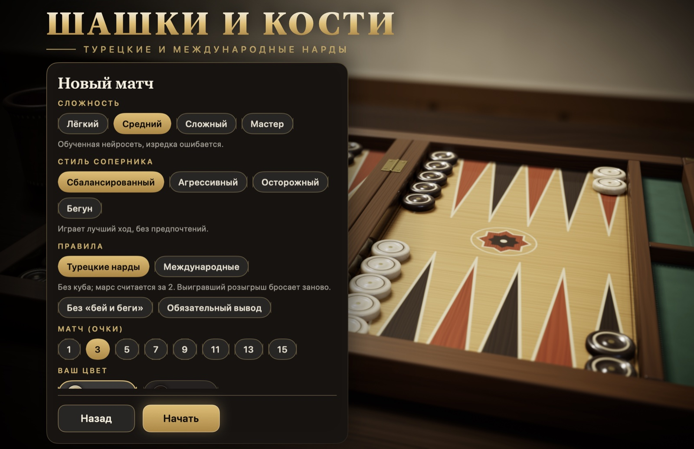
Рисунок 5.1Панель нового матча: сложность, стиль соперника, правила, матч или сессия и цвет шашек.
Сложность: «Лёгкий» часто ошибается и идеален для обучения. «Средний» — обученная нейросеть, иногда ошибается. «Сложный» — нейросеть, обученная на миллионах партий. «Мастер» вдобавок к этому просчитывает все возможные броски.
Стиль соперника: «Сбалансированный», «Агрессивный», «Осторожный» или «Бегун». Сбалансированный соперник играет лучший ход. Остальные три среди ходов с совсем небольшой разницей выбирают по своей склонности: агрессивный предпочитает бить и закрывать пункты, осторожный — не оставлять шашки открытыми, бегун — уводить задние шашки; цена этого невелика. Стиль влияет только на выбор хода компьютером; подсказка, Тренер и анализ всегда исходят из лучшего хода. Выбранный стиль сохраняется вместе с матчем.
Правила: «Турецкие нарды» или «Международные». Различия — в Таблице 2.1. Когда выбраны турецкие нарды, ниже появляются два традиционных правила: «Без „бей и беги“» и «Обязательный вывод». Оба по умолчанию выключены. Выбранные правила в течение матча не меняются.
Матч или сессия: на вкладке «Матч (очки)» вы выбираете, до скольких очков играется матч: 1, 3, 5, 7, 9, 11, 13 или 15. По международным правилам рядом есть и вкладка «Сессия»: у сессии нет длины матча, очки каждой партии записываются, а завершаете сессию вы, когда захотите. В сессии появляются и параметры «Правило Джекоби», «Бивер», «Ракун» и «Автоматические удвоения»; что это такое, рассказано в разделе 3.8, под заголовком «Правила матча и сессии». В турецких нардах сессии нет.
Ваш цвет: «Светлые» или «Тёмные». Что бы вы ни выбрали, ваши шашки всегда внизу. Цвет значка берётся из стиля шашек, выбранного в Настройках: в стиле «Красный и чёрный лак» светлая шашка красная.
Если вы начинаете новый матч, когда идёт другой, приложение сначала спросит. Текущий матч сохраняется; к нему можно вернуться с карточки «Матчи». На карточке подтверждения написана и сводка матча, который начнётся. Такое же подтверждение появляется и по ⌘N, в том числе между партиями.
5.2 Бросок зар и ход шашкой
Когда очередь доходит до вас, зары бросаются сами: высыпаются из кожаного стакана на правую половину доски. По международным правилам, если у вас есть право удвоить, приложение ждёт; на правой половине доски появляется кнопка «Бросить зары», а под ней — кнопка «Удвоить». Зары вы бросаете, нажав кнопку, сами зары или клавишу Пробел. Если в Настройках выключено «Бросать автоматически», кнопка «Бросить зары» появляется в каждый ваш ход.
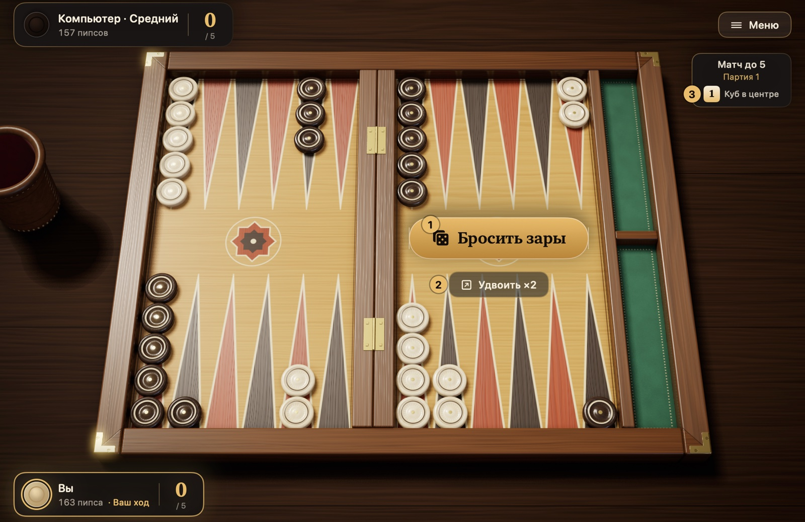
Рисунок 5.2Ваша очередь бросать, когда у вас есть право удвоить. 1 — кнопка «Бросить зары», 2 — кнопка «Удвоить», 3 — индикатор куба.
После броска зар шашки, которыми можно ходить, подсвечиваются. Шашкой вы ходите одним из таких способов:
Нажатием: сначала нажмите на шашку; пункты, куда она может пойти, отмечаются зелёными кольцами. Затем нажмите на цель. Цель, на которой будет побит блот соперника, помечена красным прицелом.
Перетаскиванием: возьмите шашку и отпустите на цели.
Быстро: двойной щелчок играет шашкой больший зар, щелчок правой кнопкой — меньший.
С клавиатуры: Tab перебирает шашки, которыми можно ходить, клавиши со стрелками выбирают цель, Return делает ход.
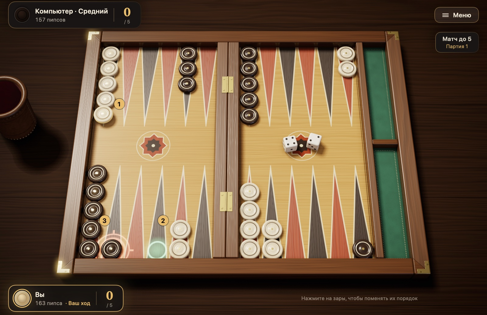
Рисунок 5.3Ход. Выпало 4-2, выбрана шашка на 13. 1 — выбранная шашка, 2 — пустой пункт, куда она может пойти при 4 (зелёное кольцо), 3 — пункт, где при 2 можно побить блот соперника (красный прицел).
Чтобы изменить, какой зар сыграть первым, нажмите на зары на доске. Когда вы сыграли последний шаг, ход завершается сам и очередь переходит к сопернику; если у вас единственный допустимый ход, приложение делает его за вас. Если вы хотите подтверждать ход сами или отменять шаги, выключите в Настройках «Автоподтверждение ходов» и включите «Показывать кнопку „Отменить“»: тогда ход завершает «Готово» (Return), а «Отменить» (⌘Z) возвращает сыгранные к этому моменту шаги один за другим. Если ходов нет, приложение говорит «Нет возможных ходов!», и очередь переходит к сопернику. Если при вашей шашке на баре дом соперника полностью закрыт, зары даже не бросаются: на экране появляется «Вы заперты», и очередь переходит сразу.
5.3 Подсказка и удобства игры
Кнопка «Подсказка» по умолчанию скрыта; она появляется справа внизу, когда в Настройках включено «Показывать кнопку „Подсказка“». Кнопка (⌘I) отмечает на доске ход, рекомендуемый движком Мастер для текущего броска; когда вы сыграете первый шаг, отметка исчезает. По международным правилам она даёт рекомендацию и по решению о кубе: до броска — «Рекомендация: удвоить» или «Рекомендация: не удваивать, просто бросить», в ответ на удвоение компьютера — «Рекомендация: принять» или «Рекомендация: отказаться». Использованные подсказки учитываются в сводке конца партии и в статистике.
«Тренер» — режим обучения; в Настройках он по умолчанию выключен. Когда он включён, движок Мастер при завершении каждого вашего хода сравнивает сыгранный ход с лучшим. Если ваш ход заметно проигрывает лучшему варианту, ход не завершается, а появляется карточка: величина ошибки в очках, ваш ход и лучший, стрелки лучшего хода на схеме доски. «Отменить» возвращает все шаги хода (даже если кнопка «Отменить» выключена), и вы играете теми же зарами заново; «Всё равно сыграть» завершает ход. По международным правилам он проверяет и решения по кубу: если вы хотите бросить зары, когда следовало удвоить, он предупреждает, и удвоить можно прямо с карточки; если вы удваиваете, когда не следовало, или неверно отвечаете на удвоение компьютера, он предупреждает, а вы либо настаиваете на своём решении, либо передумываете. «Порог предупреждения» выбирает, когда появляется предупреждение: «Все ошибки» — при потере больше 0,02 очка, «Только грубые ошибки» — больше 0,08 очка. Если Тренер предупреждал, число предупреждений записывается в сводку конца партии. Анализ после партии всё равно выполняется; поскольку он проверяет ход ещё и симуляцией, потеря там может немного отличаться.
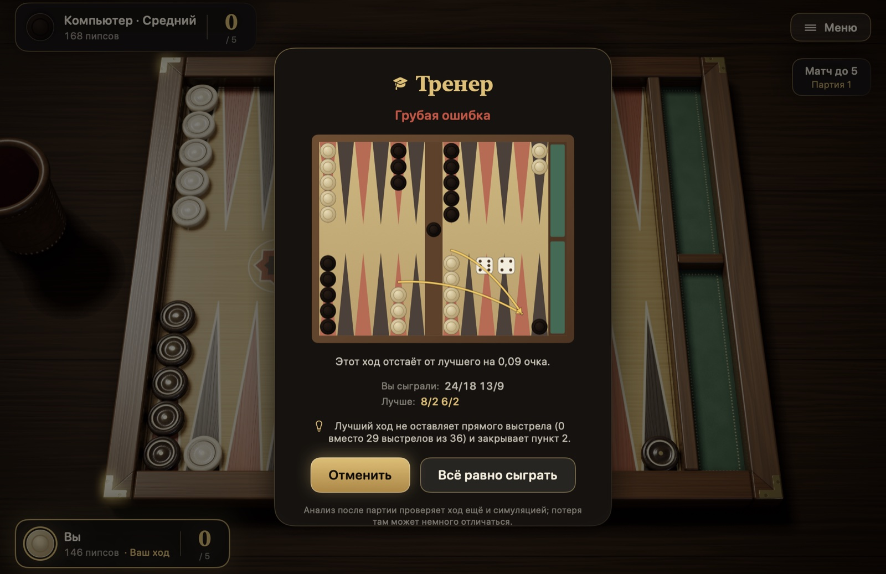
Рисунок 5.4Карточка Тренера. Сыгранный ход отстаёт от лучшего на 0,09 очка; стрелки на схеме показывают лучший ход, строка со значком лампочки — причину.
Карточка Тренера, анализ ходов, панель разбора и карточка «Поделиться» одной фразой говорят и о том, почему лучший ход сильнее; фраза стоит в строке, начинающейся со значка лампочки, например «Лучший ход бьёт шашку и закрывает пункт 5». Приложение сравнивает результаты двух ходов на доске и называет только различия в пользу лучшего хода, не больше двух: удар, оставленные блоты и число бьющих бросков, новый закрытый пункт или якорь, длина прайма, спасение задних шашек или сдерживание задних шашек соперника, закрытые пункты в доме, число выведенных шашек, шансы на марс и риск марса. Если в разборе выбран другой кандидат, фраза строится относительно него.
В разделе «Игровой процесс» Настроек есть параметры, облегчающие ход; все они, кроме кнопок «Подсказка» и «Отменить» и режима «Тренер», по умолчанию включены:
Бросать автоматически: когда очередь доходит до вас, зары бросаются сами. В те ходы, когда вы можете удвоить, приложение ждёт; решение о кубе за вами. Если выключено, каждый ход вы бросаете зары сами — кнопкой «Бросить зары» или клавишей Пробел.
Автоподтверждение ходов: ход завершается сам вместе с последним шагом. Если выключено, вы завершаете ход кнопкой «Готово» (Return); если включена кнопка «Отменить», до этого момента шаги можно отменять.
Автоматически играть вынужденные ходы: если допустимый ход единственный, приложение делает его, и ход завершается.
Подсвечивать доступные шашки и Показывать кольца целей: включают и выключают подсветку шашек и зелёные кольца. Когда кольца выключены, кольцо цели видно только на цели, выбранной с клавиатуры.
Показывать кнопку „Подсказка“ и Показывать кнопку „Отменить“: обе по умолчанию выключены — рекомендацию запросить нельзя, сыгранный шаг не отменяется. Когда вы их включаете, кнопки появляются справа внизу и работают сочетания ⌘I и ⌘Z. Когда кнопка «Отменить» выключена, рекомендацию можно запросить только до первого шага.
Тренер: по умолчанию выключен. Когда вы его включаете, ниже появляется параметр «Порог предупреждения»: «Все ошибки» или «Только грубые ошибки». Подробности выше.
5.4 Удвоение и ответ на предложение
Удвоение есть только в игре по международным правилам. Когда ход ваш и куб в центре или у вас, до броска зар нажмите кнопку «Удвоить» (⌘D). На кнопке написано значение, до которого поднимется куб, например «Удвоить ×2». Компьютер отвечает сразу: если принимает, куб переходит к нему и партия продолжается; если отказывается, вы выигрываете партию.
Когда удваивает компьютер, на экране появляется карточка:
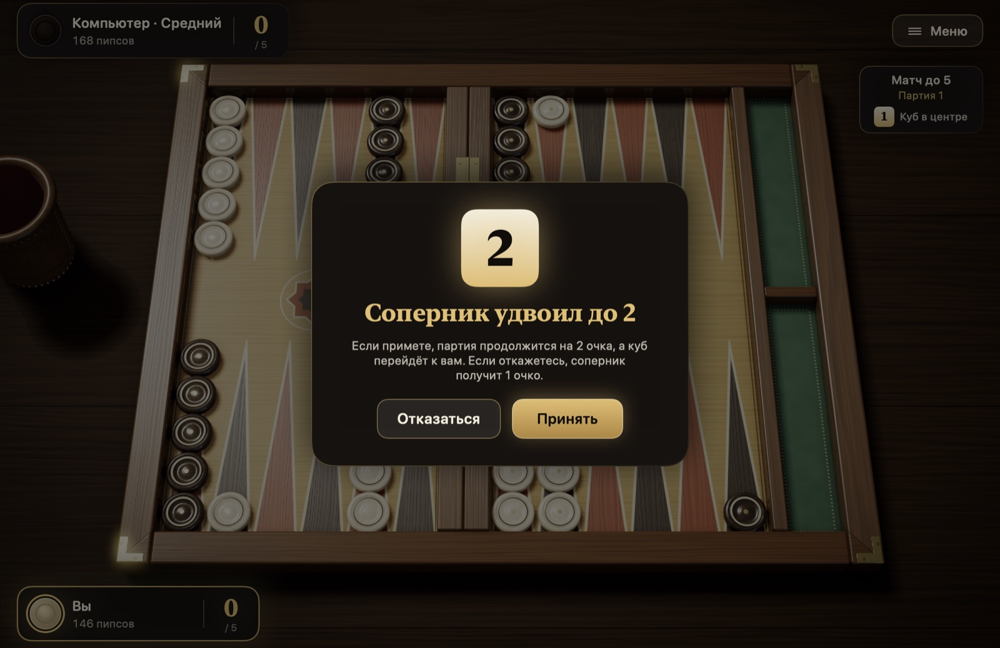
Рисунок 5.5Карточка предложения удвоения.
Принять: партия продолжается на удвоенную ставку, и куб переходит к вам.
Отказаться: вы отдаёте партию; соперник получает очки по значению куба до предложения.
Бивер: виден в сессии, если включён «Бивер». Вы принимаете удвоение и сразу поднимаете куб ещё раз, и куб остаётся у вас.
Подсказка: видна, если в Настройках включено «Показывать кнопку „Подсказка“»; показывает рекомендацию движка Мастер для вашего решения.
Когда удваиваете вы, а компьютер говорит «бивер», появляется похожая карточка: вы принимаете, отказываетесь или, если включён «Ракун», поднимаете куб ещё раз.
Значение куба и то, у кого он, написаны под сведениями о матче справа вверху: «Куб в центре», «Куб у вас» или «Куб у соперника». В матче в первой партии, которая играется, когда одной стороне остаётся 1 очко до цели, куб не используется, и там написано «Партия Кроуфорда».
5.5 Сдача и завершение сессии
Во время партии выберите «Сдаться» в меню «Игра» или на карточке паузы. На карточке вы сами предлагаете, на сколько очков сдаётесь: одинарная партия, марс или, по международным правилам, бэкгаммон. Под каждым вариантом заранее написано, примет его соперник или нет. Соперник отклоняет предложение ниже того, что обещает позиция, и партия продолжается; счёт матча и куб тоже учитываются. Невозможные уровни на карточке не показываются: если вы начали выводить шашки, марс и бэкгаммон уже невозможны, а в матче не предлагается и уровень выше того, который уже отдаёт сопернику матч.
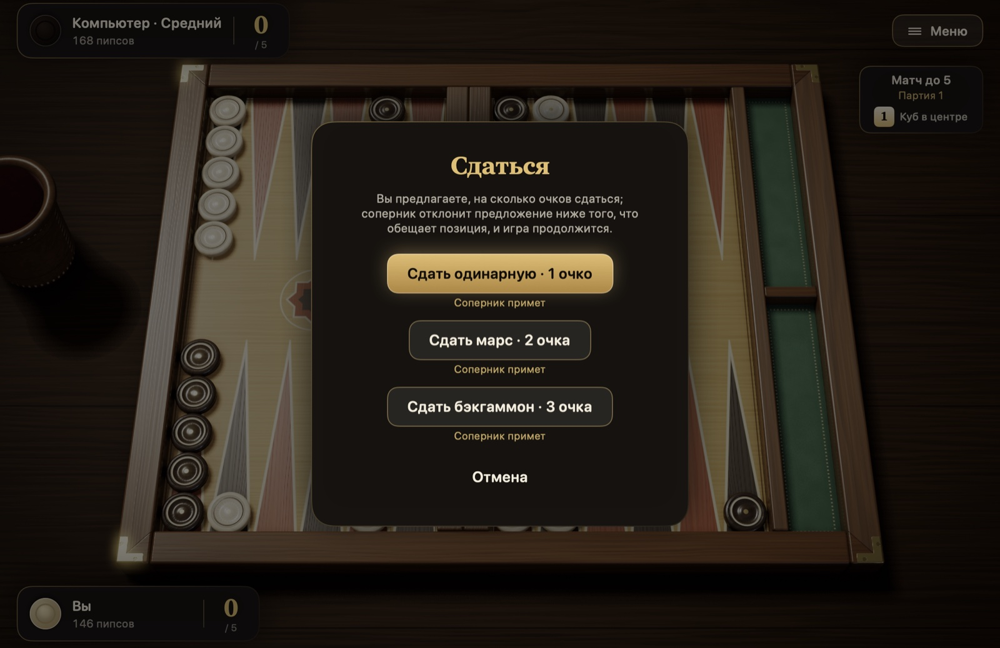
Рисунок 5.6Карточка сдачи.
Компьютер в безнадёжной гонке тоже может сдаться сам.
Сессия выбирается только по международным правилам, в турецких нардах её нет. У сессии нет длины матча; сессию завершаете вы сами кнопкой «Завершить сессию». Если вы завершаете её между партиями, с карточки результата партии, сессия заканчивается сразу. Если вы хотите завершить её во время партии, вы сдаёте текущую партию; если соперник примет, очки партии записываются, и сессия заканчивается. Результат сессии попадает в архив и статистику.
5.6 Пауза и продолжение матча позже
Кнопка «Меню» справа вверху или Esc ставит партию на паузу; повторное нажатие Esc продолжает партию. На карточке паузы находятся «Продолжить», «Настройки», «Как играть», «История ходов», «Матчи», «Сдаться» и «Покинуть матч». В самом низу написаны ID позиции и матча для текущей позиции в формате GNU Backgammon; «Скопировать ID» помещает оба в буфер обмена, «Поделиться» делится позицией как изображением; оба описаны в разделе 5.8. «Сохранить в библиотеку» добавляет позицию в библиотеку (5.12).
Матчи сохраняются сами. Кнопкой «Покинуть матч» можно вернуться в главное меню и закрыть приложение; «Продолжить» в главном меню открывает последний матч с того места, где он остановился. Если матчей несколько, карточка «Матчи» перечисляет текущие матчи и архив завершённых. К текущему матчу вы возвращаетесь кнопкой «Продолжить», ненужный убираете кнопкой «Удалить», завершённый матч смотрите заново кнопкой «Просмотр», начиная с первой партии, а кнопкой истории ходов открываете его партии и ходы и смотрите с нужной партии. В каждой строке написаны и свод правил матча, и включённые дополнительные правила. В строке «Разобрать позицию из буфера обмена» на карточке кнопка «Показать на доске» выставляет на доске позицию по скопированному ID в формате GNU Backgammon (с ID матча, если он есть); движок Мастер оценивает позицию, подробности в разделе 5.8.
В архив попадают и матчи, сыгранные в других программах: кнопка «Импорт…» на карточке «Матчи» читает записи матчей .mat программ Jellyfish и XG, собственные файлы XG .xg и .sgf программы GNU Backgammon. Поскольку в файле не сказано, кто из игроков вы, приложение показывает имена двух игроков и спрашивает «Кто из игроков вы?»; результаты и анализ показываются с точки зрения этого игрока. Партия с недопустимым ходом обрезается на этом ходу, и сообщается, сколько партий обрезано. Импортированный матч в архиве помечен «Импортировано» и перечислен с именами из файла, его можно смотреть заново кнопкой «Просмотр»; когда архив заполняется и старые матчи удаляются, импортированные остаются. Любую партию из архива, включая ваши собственные матчи, можно позже отдать на анализ движку Мастер кнопкой «Анализировать» в истории ходов; ошибки, кандидаты и удача в зарах разбираются так же, как в разделе 5.7. Кнопка «Разобрать все» в заголовке раздела «Завершённые матчи» по очереди, в фоне, анализирует все партии, у которых ещё нет анализа; ход выполнения отображается в той же строке, а кнопка с крестиком останавливает анализ. В строке матча, анализ которого завершён, видно примерное значение PR; карточка «Статистика» сводит эти значения в тренд PR (5.7).
Рисунок 5.7Импорт. На карточке «Матчи» прочитан файл .mat: спрашивается, кто из двух игроков в файле вы; ниже — матчи в архиве.
5.7 Конец партии, анализ и статистика
Когда партия заканчивается, карточка показывает результат: выигранные очки, причину марса или бэкгаммона, счёт матча и сводку партии. В сводке — продолжительность, средний бросок обеих сторон, удача в зарах, использованные вами подсказки и, если Тренер предупреждал, число предупреждений; удача в зарах после завершения анализа считается по реальной ценности бросков в позиции (ниже). Когда матч закончен, кнопка «Новый матч» на карточке начинает новый матч с вашими последними настройками, не открывая панель; под кнопкой написана сводка матча, который начнётся.
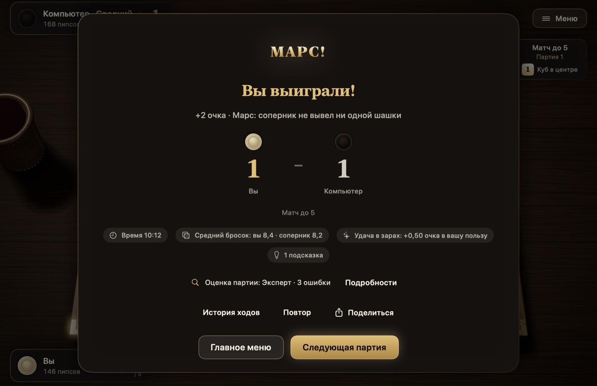
Рисунок 5.8Карточка результата партии.
«Оценка партии» в середине карточки получается из разбора ваших решений в партии движком Мастер; рядом — примерное значение PR и число ошибок. «Подробности» открывает карточку анализа. Раздел «Удача в зарах» наверху даёт общую удачу обеих сторон, чистую удачу, ваш самый удачный и самый неудачный бросок. Удача броска — это разница в очках между ценностью лучшего хода, который можно сыграть этим броском, и средним по 21 возможному броску; больше 0,3 очка считается удачей или неудачей, больше 0,6 — большой удачей или большой неудачей и отмечается в истории ходов значком рядом с зарами. Ниже перечислены решения, которые проиграли лучшему варианту больше 0,02 очка: на маленькой схеме позиция в момент решения и стрелки лучшего хода, рядом ваш ход, лучший и потеря. «Кандидаты» раскрывает до пяти лучших кандидатов этого хода с их потерями. Решения по кубу тоже входят в список. Когда матч закончен, даётся и оценка матча. Кнопка «В карточки» превращает ошибки в ходах шашками из списка в карточки, которые вы будете учить с интервальным повторением; грубые ошибки сами становятся карточками, когда анализ завершён (5.12).
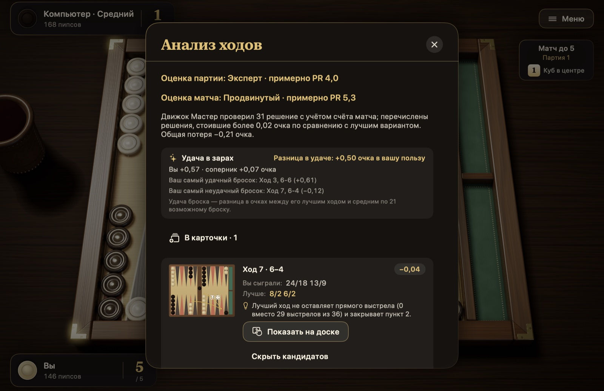
Рисунок 5.9Анализ ходов.
«Показать на доске» переносит решение на доску: позиция выставляется такой, какой была в момент решения, лучший ход отмечается шашками и кольцами целей, открывается панель разбора: в горизонтальном окне справа от доски, в вертикальном — под ней. Из плашек на панели «Позиция» возвращает к отмеченной позиции; «Лучший», «Сыграно» и остальные кандидаты разыгрывают этот ход на доске, на каждой плашке написана потеря хода относительно лучшего. При решениях по кубу плашки показывают варианты и их потери, на доске ничего не играется. Стрелками или клавишами ← и → вы переходите к предыдущей и следующей ошибке, Пробелом переключаетесь между позицией, лучшим и сыгранным ходом. «Скопировать ID» и «Поделиться» выносят позицию за пределы приложения, оба в разделе 5.8; «Сохранить в библиотеку» добавляет позицию в библиотеку (5.12); «К анализу» возвращает к карточке, «Закрыть» завершает разбор.
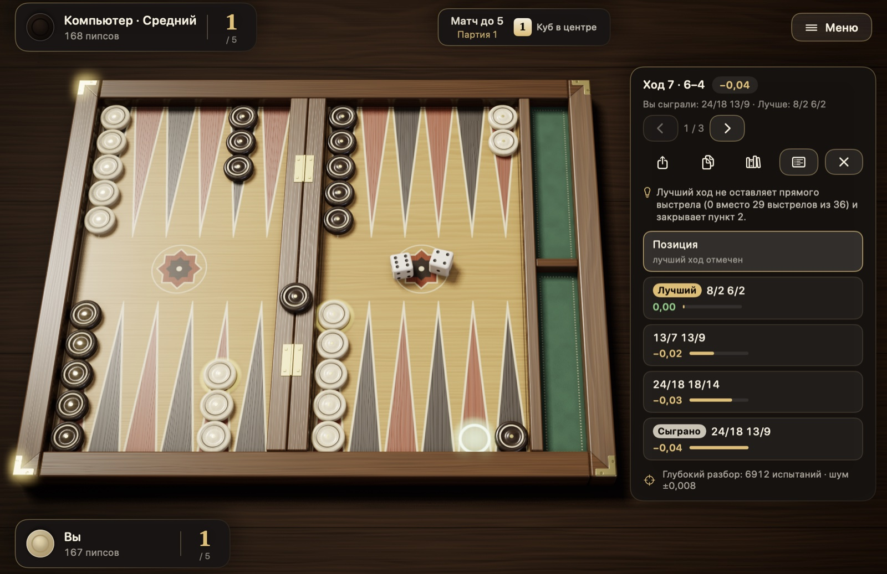
Рисунок 5.10Панель разбора после Глубокого разбора. Сыгранный ход отстаёт от лучшего на 0,04 очка; выбрана плашка «Позиция», лучший ход отмечен на доске; строка со значком лампочки показывает причину, самая нижняя строка — число испытаний и погрешность шума.
Кнопка «Глубокий разбор» на панели заново оценивает кандидатов этого решения гораздо большим числом симуляций: к 3-слойному поиску Мастера для каждого кандидата добавляется симуляция из 6912 испытаний, и берётся среднее двух. Симуляция идёт блоками, двумя независимыми половинами зёрен; погрешность шума, рассчитанная по разбросу блоков, указывается рядом с результатом. Потери и порядок кандидатов обновляются по новым значениям; если разница между двумя кандидатами меньше погрешности шума, значит, играть можно оба. На Mac это занимает секунду-другую, на iPad немного дольше; ход выполнения отображается на панели.
Меню «Полный роллаут» на панели доигрывает кандидатов до конца партии. В меню вы сначала задаёте слой, на котором выбираются ходы, затем число испытаний: вариант «1 слой» быстрый, ходы в симуляции выбираются прямой оценкой быстрой сети (648, 1296 или 2592 испытания); вариант «2 слоя» на каждом ходу рассматривает 21 бросок соперника и занимает примерно втрое больше времени (648 или 1296 испытаний). Все кандидаты доигрываются с одними и теми же последовательностями зар; уменьшение дисперсии вычитает из результата удачу каждого броска, поэтому малая погрешность шума получается уже при небольшом числе испытаний. В строке результата указаны число испытаний, слой и наибольшая среди кандидатов погрешность шума; потери и порядок обновляются по новым значениям. Глубокий разбор быстрее, а Полный роллаут нужен, когда важна точность.
Кнопками внизу карточки результата партии вы открываете историю ходов, смотрите партию заново, делитесь результатом как изображением, возвращаетесь в главное меню или переходите к следующей партии.
Карточка «Статистика» в главном меню показывает число выигранных и сыгранных матчей и партий, долю побед, сделанные и полученные марсы, вашу самую длинную серию побед, результаты по уровням, распределение зар (сколько раз выпала каждая грань, рядом с ожидаемым числом на грань), ваш тренд PR (примерное значение PR проанализированных матчей из архива в виде линии от старых к новым; под ней — последнее значение, лучшее и среднее за последние пять матчей), результаты позиции дня (решённые позиции, серия, лучшая серия и средняя потеря; в разделе 5.12) и последние матчи. Сыгранные сессии и чистые очки в сессиях учитываются отдельно. Кнопкой «Сбросить статистику» вы начинаете с нуля.
Раздел «Достижения» на карточке перечисляет двадцать значков: первая победа, десять и сто побед, первый матч, матч до 7 очков и больше, марс, бэкгаммон, партия, выигранная при кубе 4 и выше, партия и матч против Мастера, партия без ошибок, низкий PR, серия из пяти побед, сто партий, позиция дня с первой попытки, семь и тридцать дней подряд, импорт файла матча, анализ партии из архива и глубокий разбор одного решения. Полученные показаны золотым и с датой, остальные — бледными и с условием; когда достижение получено, вверху экрана появляется короткое уведомление. Достижения хранятся только на этом устройстве, даже при включённой синхронизации с iCloud; у приложения нет своего сервера, и оно не требует учётной записи.
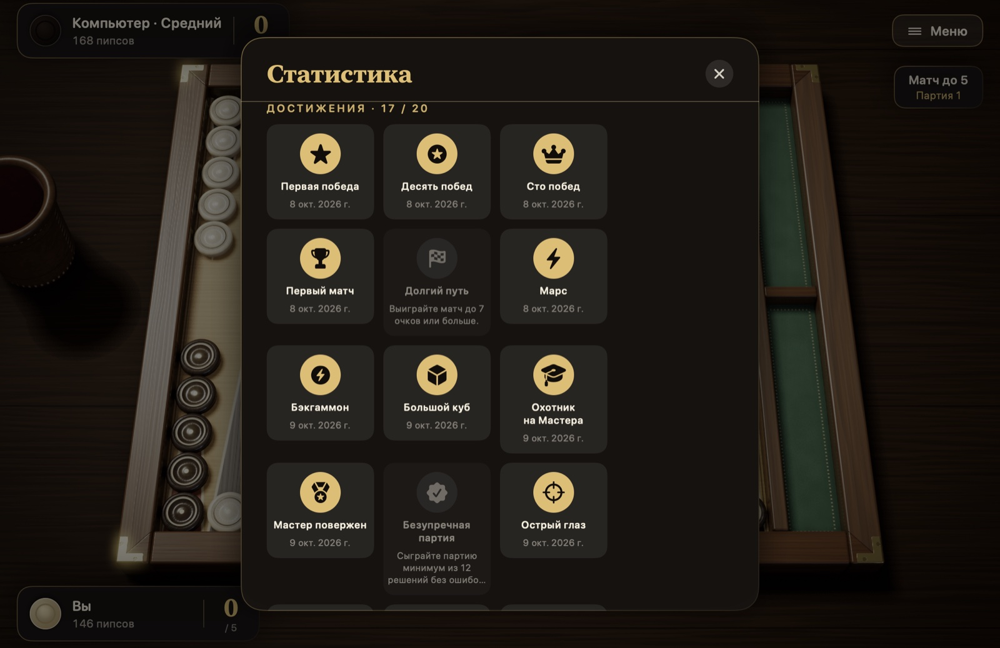
Рисунок 5.11Раздел «Достижения» на карточке «Статистика». Полученные значки — золотые и с датой, остальные — бледные и с условием.
5.8 История ходов, повтор и экспорт
«История ходов» (⌘L) перечисляет все ходы обеих сторон, события удвоения и сдачи. Если в матче несколько партий, партия выбирается кнопками наверху.
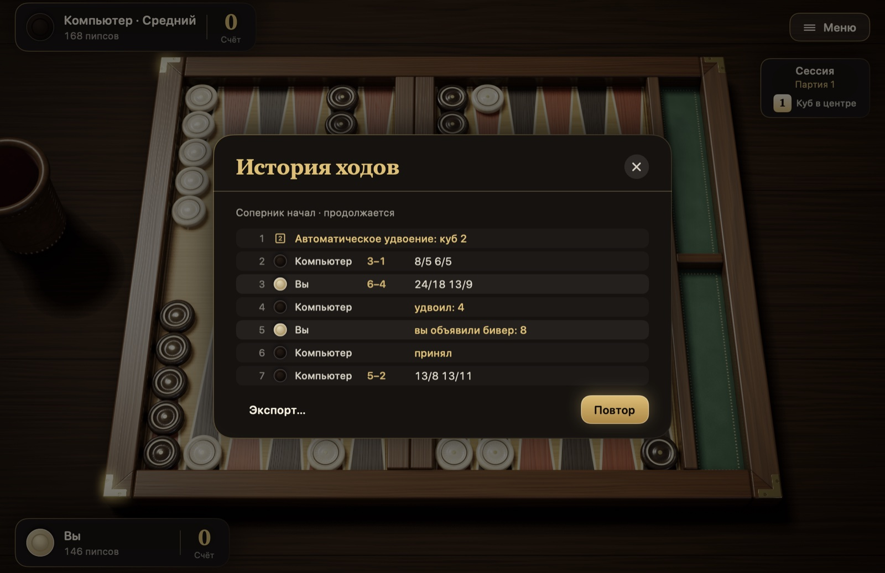
Рисунок 5.12История ходов. История из сессии: автоматическое удвоение, ходы с зарами, строки удвоения, бивера и принятия.
Завершённую партию можно посмотреть с начала с настоящими анимациями кнопкой «Повтор»: ← и → переключают ходы, Пробел запускает и останавливает. Если в матче несколько партий, в верхней строке панели написаны номер партии и счёт на её начало; стрелками рядом вы переходите к предыдущей и следующей партии, после последнего хода партии → переходит к началу следующей, перед первым ходом ← — к концу предыдущей. «Экспорт…» записывает матч в трёх форматах: читаемый текст (.txt), .mat, который читают Jellyfish и XG, и формат .sgf программы GNU Backgammon. Так свой матч можно отдельно разобрать в этих программах; их записи вы, в свою очередь, загружаете кнопкой «Импорт…», см. раздел 5.6.
У каждой позиции есть два ID в формате GNU Backgammon: ID позиции из 14 символов хранит расположение шашек, ID матча из 12 символов — счёт, куб, очередь и зары. На карточке паузы показаны оба; «Скопировать ID» там и на панели разбора помещает оба в буфер обмена. Вставив ID в GNU Backgammon или другую программу, понимающую этот формат, вы в точности выставляете там позицию, а написав их на форуме, можете спросить других. Работает и обратное: скопированный ID вы выставляете на доске кнопкой «Разобрать позицию из буфера обмена» на карточке «Матчи»; оценку движка Мастер и, если в ID матча есть зары, лучшие ходы вы видите на панели разбора. Кнопка «Поделиться» (на карточке паузы, на панели разбора и на карточке результата партии) делится позицией или результатом как изображением: схема доски, счёт и строки пояснения, ниже ID и страница приложения. Изображение можно отправить из меню «Поделиться» через Сообщения, Почту или AirDrop.
5.9 Настройки
В Настройки вы попадаете из главного меню или с карточки паузы. Изменения применяются сразу.
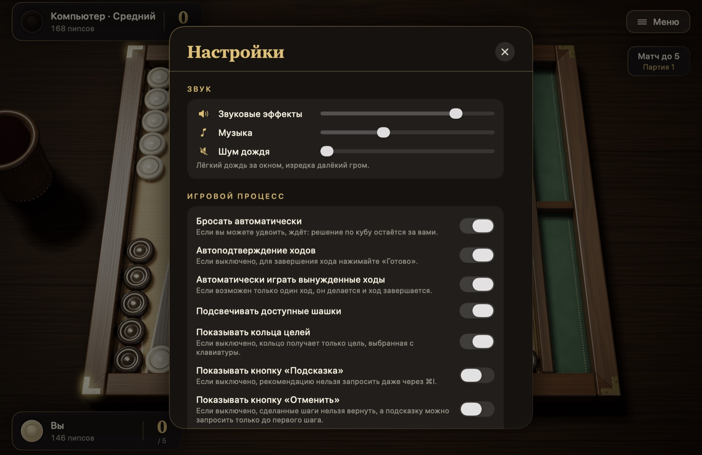
Рисунок 5.13Настройки.
Звук: отдельные уровни для звуковых эффектов, музыки и шума дождя за окном.
Игровой процесс: автоматический бросок, автоподтверждение и вынужденный ход, доступные шашки, кольца целей, кнопки «Подсказка» и «Отменить», Тренер и порог предупреждения; подробности в разделе 5.3. Правил в Настройках нет: два традиционных правила турецких нард выбираются на панели нового матча.
Скорость: скорость анимации и время на размышление соперника. Когда «Стакан для зар» выключен, зары бросаются без стакана, и бросок происходит быстрее.
Внешний вид: доска («Классический орех», «Перламутр», «Клён», «Эбеновая ночь», «Дуб и олива»), шашки («Самшит и эбен», «Мрамор и оникс», «Красный и чёрный лак»), зары («Слоновая кость», «Эбен», «Янтарь») и сукно («Зелёное», «Бордовое», «Тёмно-синее»). Стиль шашек и зар меняет и звук; значки шашек на экране тоже берут цвета выбранного стиля шашек. «Дом слева» зеркально отражает доску, шашки выводятся влево. «Номера пунктов» показывает на бортах вашу нумерацию.
Камера: кинематографичная камера (наезд в начале матча, низкий облёт в конце), масштаб и наклон камеры.
Язык и текст: турецкий, английский, французский, немецкий, испанский, португальский, итальянский, греческий и русский. При выборе «Системный» используется язык системы. Размер текста может быть «Системный», «Обычный», «Крупный» или «Очень крупный»; «Системный» следует системной настройке размера текста.
iCloud: если включена «Синхронизация с iCloud», текущие матчи, архив, библиотека и карточки синхронизируются через ваш iCloud Drive между вашими устройствами с одной учётной записью Apple; статистика и достижения у каждого устройства свои. По умолчанию синхронизация выключена. Строка под переключателем показывает время последней синхронизации, а кнопка «Синхронизировать» запускает синхронизацию сразу, не дожидаясь. iCloud есть только в версии из App Store; если iCloud Drive выключен, строка сообщает об этом.
5.10 Сочетания клавиш
Все ходы на доске можно делать с клавиатуры, не пользуясь мышью.
Таблица 5.1 Сочетания клавиш
Клавиша
Что делает
Пробел
Бросает зары, если приложение ждёт броска; при выключенном автоподтверждении подтверждает ход; в повторе запускает и останавливает, в разборе переключает между позицией, лучшим и сыгранным ходом
Return
Ходит шашкой на цель, выбранную с клавиатуры; при выключенном автоподтверждении подтверждает ход
Tab, ⇧Tab
Перебирает шашки, которыми можно ходить
Клавиши со стрелками
Перебирают цели выбранной шашки
Esc
Ставит паузу, повторное нажатие продолжает партию; закрывает открытую карточку
⌘Z
Отменяет последний шаг; работает при включённой кнопке «Отменить»
⌘I
Подсказка; работает при включённой кнопке «Подсказка»
⌘D
Удваивает
⌘L
Открывает историю ходов
⌘N
Новый матч; во время матча, в том числе между партиями, сначала спрашивает
⌘?
Открывает карточку «Как играть»
← →
В повторе — предыдущий и следующий ход; в разборе — предыдущая и следующая ошибка
5.11 Универсальный доступ
Программа чтения с экрана: на доске можно играть с VoiceOver. Пункты, бар, выведенные шашки и зары — отдельные элементы; для каждого читается, чьи шашки и сколько их на нём, доступен ли он для хода, выбран ли и является ли целью. Ваши зары, ходы соперника и побитые шашки объявляются голосом.
Уменьшение движения: если в macOS включено «Уменьшить движение», отключаются анимации камеры, покачивание и параллакс меню, стакан для зар, подпрыгивание шашек и золотой дождь.
Контрастность: если в macOS включена настройка «Увеличить контрастность», текст и линии интерфейса рисуются отчётливее.
Размер текста: вариант «Системный», выбранный по умолчанию, следует системной настройке размера текста (на Mac — страница «Дисплей» раздела «Универсальный доступ» в Системных настройках, на iPad — «Экран и яркость»); в Настройках можно выбрать и «Крупный» или «Очень крупный». Карточки и индикаторы соответственно увеличиваются.
Клавиатура: все ходы на доске можно делать с клавиатуры; клавиши — в Таблице 5.1.
5.12 Тренировка: позиция дня, карточки, дебюты, библиотека и редактор позиции
Карточка «Тренировка» в главном меню объединяет пять инструментов для тренировки: «Позиция дня», «Карточки», «Библиотека дебютов», «Библиотека» и «Редактор позиции».
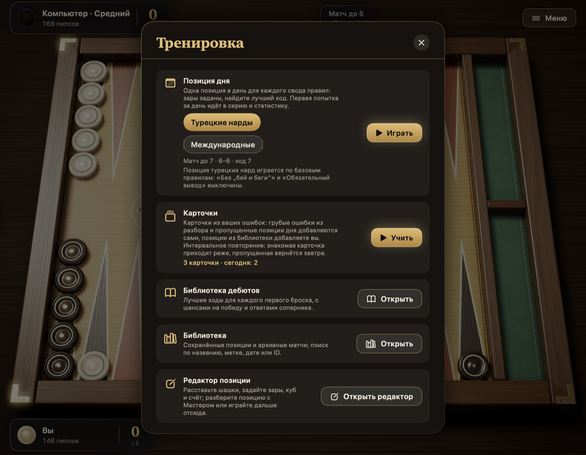
Рисунок 5.14Карточка «Тренировка»: плитки «Позиция дня» (плашки правил, длина матча, счёт и номер хода), «Карточки» (сводка колоды), «Библиотека дебютов», «Библиотека» и «Редактор позиции».
Позиция дня. Каждый день приходит новая позиция; в один и тот же день все решают одну и ту же позицию. Позиция приходит отдельно для двух сводов правил: плитка открывается на правилах, выбранных на панели «Новый матч», и переключается плашками «Турецкие нарды» и «Международные»; позиция турецких нард играется по базовым правилам, «Без „бей и беги“» и «Обязательный вывод» выключены. Зары заданы, лучший ход находите вы. На плитке написаны длина матча, счёт и номер хода; «Играть» выставляет позицию на доске, и вы делаете свой ход. Когда ход завершён, появляется карточка результата: если ваш ход лучший, она говорит «Верный ход!», если нет — «Был ход получше» или «Грубая ошибка»; ниже — схема позиции и стрелки лучшего хода, ваш ход и лучший, фраза с объяснением причины. «Показать на доске» открывает кандидатов на панели разбора, «Попробовать снова» задаёт ту же позицию ещё раз, «Завершить» возвращает в главное меню. Считается только первая попытка за день, в каком бы из двух сводов правил она ни была: если вы нашли верный ход, ваша серия удлиняется на день, если нет — серия обнуляется; повторные попытки не учитываются ни в серии, ни в статистике. Карточка «Тренировка» показывает, решили ли вы позицию сегодня, и серию, а если не решили — вашу потерю относительно лучшего хода; число решённых позиций, серия, лучшая серия и средняя потеря — на карточке «Статистика».
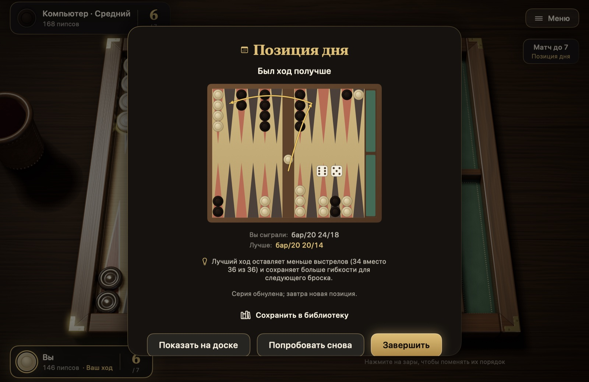
Рисунок 5.15Карточка результата позиции дня. Сыгранный ход отстаёт от лучшего: стрелки на схеме показывают лучший ход, строки под ней — сыгранный и лучший ход, фраза со значком лампочки — причину.
Карточки. Из ваших ошибок складывается колода: грубые ошибки из анализа в конце партии и позиции дня, в которых вы не нашли лучший ход, сами становятся карточками; кнопка «В карточки» на карточке анализа добавляет остальные ошибки в ходах шашками, а кнопка со значком карточек в строке библиотеки у позиции с зарами — эту позицию. Каждая карточка — вопрос: позиция и зары заданы, вы находите лучший ход. На плитке написаны число карточек в колоде, сколько из них будет задано сегодня или когда придёт следующая, и число выученных. «Учить» по очереди задаёт карточки, срок которых подошёл (не больше двадцати); если таких нет, досрочно задаёт десять карточек с ближайшим сроком. Карточка играется как позиция дня; на карточке результата написано, какая она по счёту, сколько карточек вы решили верно и когда её зададут снова, а кнопка «Следующая» открывает следующую. Интервальное повторение: верно решённая карточка возвращается через день, потом через шесть дней, потом через всё более длинные интервалы; пропущенная карточка приходит снова на следующий день. Карточка, интервал которой превысил три недели, считается выученной. Занятия с карточками не учитываются в статистике и серии позиции дня.
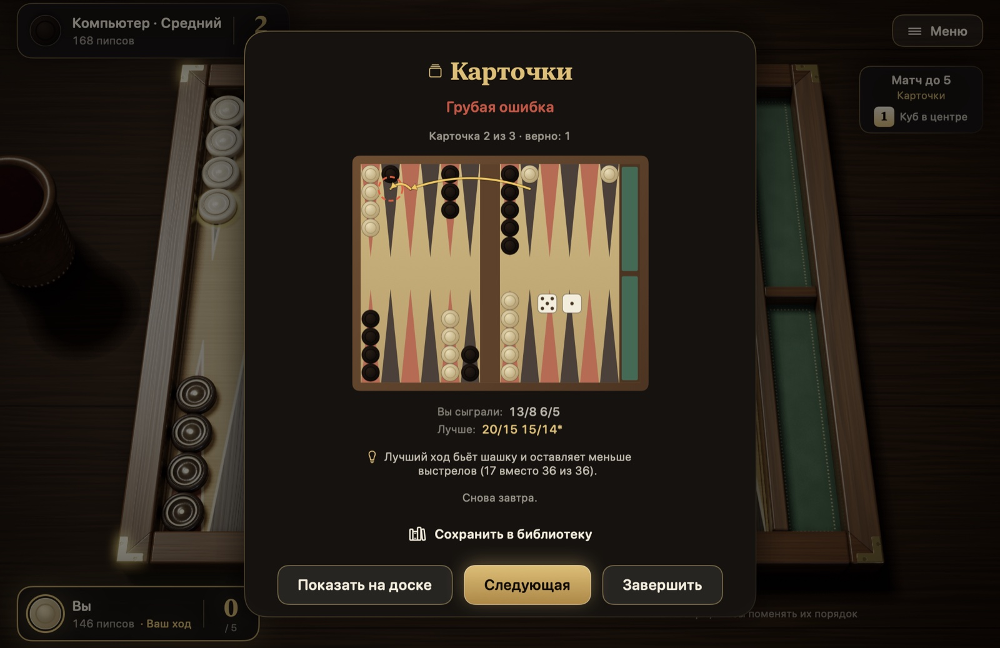
Рисунок 5.16Карточка результата занятия с карточками: вверху — номер карточки и число верных ответов, внизу — день, когда карточку зададут снова.
Библиотека дебютов. Для каждого из двадцати одного первого броска она перечисляет лучшие ходы: с потерей относительно лучшего, шансами на победу и марс. Значения — среднее между 3-слойным поиском Мастера и симуляцией из 5184 испытаний, доигранной до конца партии; вероятности берутся из симуляции. Плашками наверху вы выбираете свод правил: по международным правилам дубль партию не открывает, в турецких нардах — открывает. Когда вы выбираете бросок, схема показывает лучший ход; «Ответы соперника» раскрывает лучший ответ на каждый бросок соперника после этого хода. «Выставить на доске» выставляет начальную позицию с этим броском в режиме разбора: кандидаты разыгрываются на доске, так вы отрабатываете дебютные ходы из раздела 4.3.
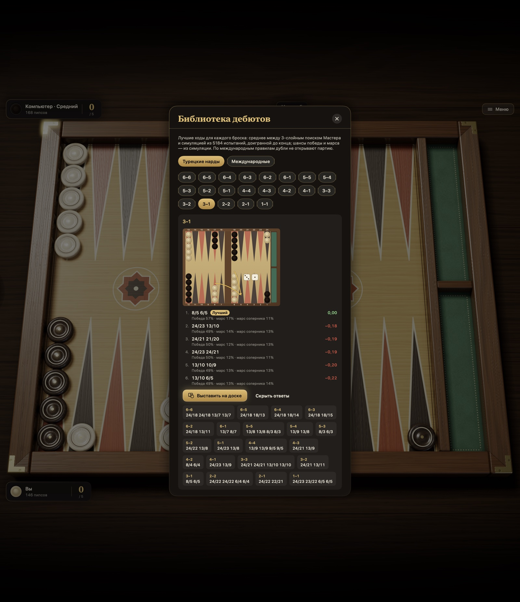
Рисунок 5.17Библиотека дебютов: свод правил, 21 первый бросок, схема лучшего хода для 3-1, кандидаты с шансами на победу и марс, ниже ответы соперника.
Библиотека. Сохранённые вами позиции и матчи из архива собраны на одной карточке. Позицию вы добавляете кнопкой «Сохранить в библиотеку» на карточке паузы, на панели разбора, в редакторе позиции или на карточке результата позиции дня; одна и та же позиция дважды не добавляется, кнопка становится «В библиотеке». В каждой строке вкладки «Позиции» написаны название позиции, дата, откуда она взята, сведения о матче и зарах, метки и заметка: карандашом вы меняете название, метки (через запятую) и заметку, корзиной удаляете позицию; «Открыть на доске» выставляет позицию на панели разбора, и движок Мастер её оценивает. Вкладка «Матчи» перечисляет архив: разделяет выигранные и проигранные матчи, показывает примерное значение PR проанализированных матчей, «Просмотр» показывает матч заново. Поле поиска ищет по названию, метке, заметке, дате и ID; плашки разделяют турецкие нарды и международные правила.
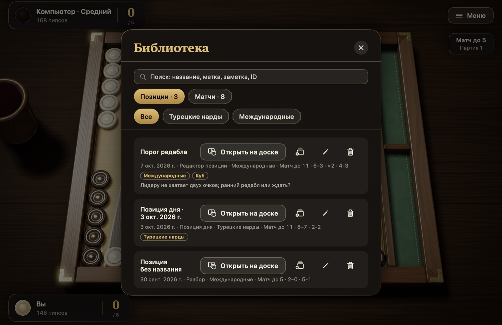
Рисунок 5.18Библиотека: поле поиска, вкладки «Позиции» и «Матчи», плашки правил; у каждой позиции рядом с названием — кнопки «Открыть на доске», добавления в карточки, изменения и удаления, ниже — дата, источник, сведения о матче, метки и заметка.
Редактор позиции. Вы вручную выставляете любую позицию; в редактор вы входите с карточки «Тренировка» или кнопкой «Открыть редактор» на карточке «Матчи». Выберите инструмент «Поставить светлую шашку», «Поставить тёмную шашку» или «Убрать» и нажимайте на пункты доски и бар (на iPad — касайтесь); на Mac щелчок правой кнопкой убирает шашку. У каждой стороны не больше 15 шашек, шашки не на доске считаются выведенными, на закрытый пункт соперника шашка не ставится. Внизу выбираются, чей ход, зары (можно и «Без зар»), значение и положение куба, длина матча, счёт и то, сыграна ли партия Кроуфорда. «Начальная позиция» выставляет начальную расстановку, «Очистить» очищает доску, «Поменять стороны» выставляет позицию с точки зрения соперника, «Вставить» читает ID позиции из буфера обмена. «Разобрать» открывает позицию на панели разбора: вы видите оценку движка Мастер и, если задали зары, лучшие ходы. «Играть» начинает с этой позиции свободную партию; свободная партия не сохраняется и не попадает ни в статистику, ни в архив. Для позиции, которую нельзя выставить, обе кнопки отключаются, и указывается причина: если одна сторона вывела все шашки или счёт достиг длины матча.
Глава 6
Справочник
Эта глава — для справки: часто задаваемые вопросы, словарь терминов и указатель. Столбец «См.» таблицы терминов ведёт к разделам, где объясняется каждый термин.
6.1 Часто задаваемые вопросы
У меня плохие зары, могу ли я пропустить ход? Нет. Если зары допускают какой-либо ход, вы обязаны его сделать. Пропуск происходит сам собой только тогда, когда нельзя сыграть ни один зар.
Могу ли я ходить шашкой соперника? Нет. Каждый игрок ходит только своими шашками.
Могу ли я после удара продолжить той же шашкой? По международным правилам — да: удар не завершает путь шашки, оставшимся заром вы можете продвинуть её дальше. А в распространённых турецких нардах «бей и беги» в своём доме запрещено. В приложении «Шашки и Кости» при игре по турецким правилам этот запрет действует, если в новом матче выбрано «Без „бей и беги“»; по умолчанию он выключен.
Сколько шашек максимум можно поставить на один пункт? Ограничения нет. На своём пункте вы можете собрать сколько угодно шашек.
Могу ли я начать вывод, когда у меня есть побитая шашка? Нет. Для вывода все ваши шашки должны быть в вашем доме; шашка на баре считается вне дома.
Обязан ли я складывать оба зара и ходить одной шашкой? Нет. Два зара можно отдать и двум разным шашкам. Если вы ходите одной шашкой, промежуточная остановка должна быть открыта.
Может ли партия закончиться вничью? Нет. Поскольку игроки ходят по очереди, кто-то обязательно заканчивает первым.
Мне пришлось разрушить закрытый пункт в своём доме, это ошибка? Не всегда. Иногда зары не оставляют другого выбора; правило вынужденного хода выше всего остального.
В приложении «Шашки и Кости» я по ошибке сходил шашкой, что делать? При настройках по умолчанию сыгранный шаг не отменяется. Чтобы можно было отменять, включите в Настройках «Показывать кнопку „Отменить“»; шаги текущего хода можно отменять до завершения хода. Когда включено «Автоподтверждение ходов», ход завершается вместе с последним шагом; если выключить и его, отменять можно до тех пор, пока вы не нажмёте «Готово».
Почему мой счёт пипсов внезапно вырос? Вашу шашку побили. Поскольку шашка, ушедшая на бар, возвращается в начало пути, ваш счёт пипсов растёт на расстояние, которое потеряла эта шашка.
Зары подкручены? Нет. Зары бросаются на этом устройстве генератором случайных чисел операционной системы; для обеих сторон используется один и тот же генератор, и никакой подстройки под уровень сложности нет. В коротких сериях дубли или плохие зары подряд — обычное дело; в долгой перспективе распределение выравнивается. Карточка «Статистика» показывает, сколько раз выпала каждая грань, рядом с ожидаемым числом на грань.
Могу ли я разобрать в приложении «Шашки и Кости» матч, сыгранный в другой программе? Да. Запись матча .mat программ Jellyfish и XG, .xg программы XG или .sgf программы GNU Backgammon вы добавляете в архив кнопкой «Импорт…» на карточке «Матчи»; его партии можно смотреть, а кнопкой «Анализировать» отдать на анализ движку Мастер. Подробности в разделе 5.6.
Могу ли я сам выставить позицию и спросить о ней? Да. В инструменте «Редактор позиции» на карточке «Тренировка» вы выставляете шашки, зары, куб и счёт, а кнопкой «Разобрать» видите оценку движка Мастер и лучшие ходы; подробности в разделе 5.12.
Переносятся ли мои матчи между Mac и iPad? Если захотите. Когда в Настройках включена «Синхронизация с iCloud», текущие матчи, архив, библиотека и карточки синхронизируются через ваш iCloud Drive между вашими устройствами с одной учётной записью Apple; статистика и достижения остаются на каждом устройстве отдельными. Синхронизация по умолчанию выключена и есть только в версии из App Store.
6.2 Термины и указатель
Таблица 6.1 Термины и указатель
Термин
Значение
См.
Бар
Выступ посередине, делящий доску на две части; здесь ждут побитые шашки
Позиция, которая каждый день приходит всем, отдельно для двух сводов правил: зары заданы, ищется лучший ход; первая попытка за день идёт в серию и статистику
Если вы дошли до этого места, значит, вы познакомились со всеми правилами нард, основными планами и каждым уголком приложения «Шашки и Кости». Остальное осваивается за доской. Первые матчи играйте на уровне «Лёгкий»; заглядывайте в анализ проигранных партий, смотрите, какие решения стоили очков, а потом поднимайте уровень. Зары улыбаются то вам, то сопернику; в долгой перспективе разницу определяют ваши решения.
Пять тысяч лет нарды усаживают людей по двум сторонам стола. Надеюсь, что приложение «Шашки и Кости» станет маленьким вкладом в эту традицию и подарит вам приятные часы. Ваши отзывы и предложения помогают делать приложение лучше.